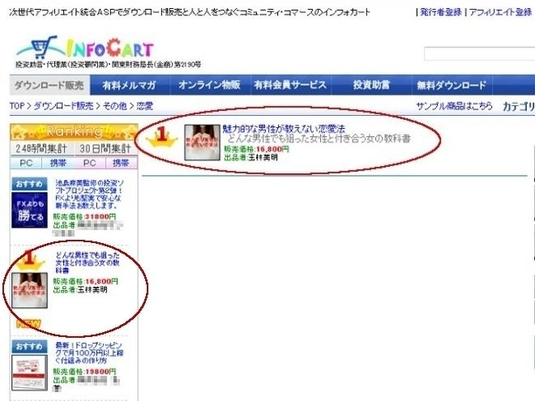
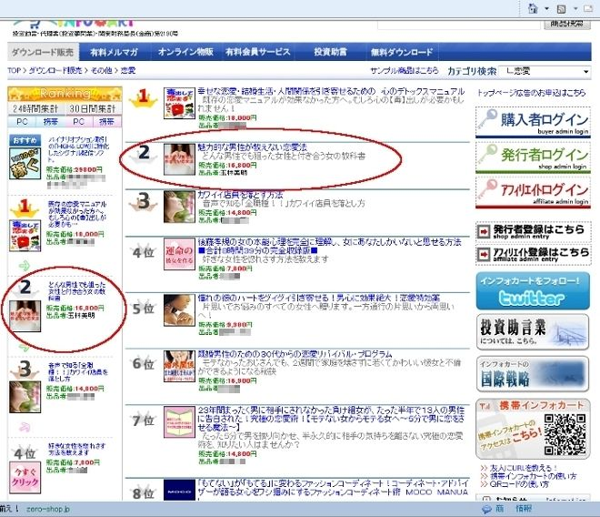

| 1位の実績を持つ女性を好きにさせる方法 | |
| 玉林 美明 | |
| (2018) | |
目次
1- 6 女性の感情はポイント制（じっくりと時間をかけて教育する）
4- 8 「指摘注 意→ メール放置後」相手から追い打ちメールが来た場合のケース別対応
4-1 2 同じタイプでも①と②、③と④の様に、異なる性質が出てくる理由
6- 4 返信に間が開き「レスが遅くなったお詫びのメール」が来るケース「試す行 動2 」
6- 6 食事に行く約束をしたのに場所や日程を変更しようとしてくる「試す行 動2 」
6- 7 会う直前に氏名や年齢などプライベート情報を聞いてくる「試す行 動2 」
6- 8 メールでの名前の呼び捨て、打ち間違い「試す行 動2 」
初めに
私は、かつて情報商材が流行っていた頃、無名のまま恋愛商材を発行し、販売開
始3
か月で大手情報商材販売会社「インフォカート」の恋愛部門
で
2
4
時間販売ランキング１位
を3
回獲得
（
201
2年
1
2
月）した。（下記画像参照）

その後、同社の月間販売ランキン グ2 位まで獲得したのである。

価格は販売当 初 14,80 0 円で最終的に は 69,80 0 円まで上げた。勿論、ただ単に価格を上げたのではない。購入者の要望に応え、メール実録や会話実録など教材の内容を追加し、結果当初 の3 倍以上の内容になったからだ。結果、購入か ら1 週間以内なら無条件返金という内容を付けていたにも関わらず、返金はゼロだった。何故、そこまで私の商材が売れたのか？それ は1 つに「正しい女性の落とし方」は世の中の恋愛常識と「真逆のことを行う」からだ。そもそも、情報商材の中でも取り分け「恋愛商材」は圧倒的に売れにくい。何故なら、もともと情報商材自体が胡散臭い上に、まともな内容を書いてある商材が皆無に等しいからである。一方で、世の中には沢山の恋愛本・ノウハウが溢れている。最近では、女性が男性に対して、恋愛を指導する内容もあるようだが、兎に角、役立つ内容が無い。大体、世の中に出ている恋愛ノウハウの殆どが「女性に優しくしろ」「こうやって女性の気を惹け」「こんなことするから女性に嫌われる」など、女性に優しく接する内容ばかりである。だから、私の商材 は1 位というを獲得できたのである。
1
つ、あなたに質問したい。
女性に優しくして、理解しようとして、アピールして、その女性と上手く行ったことがあるだろうか？
女性に優しくすればするほど、アピールすればするほど、女性の気持ちは遠ざかった筈である。つまり、世の中にある恋愛ノウハウの殆どがデタラメなのである。そして、そういったノウハウを今や女性自身が平気で紹介しているから呆れるとしか言いようがない。大体、所謂美人・美女の落とし方・心理すら誤解している。本書はそういった世の中に溢れている恋愛のデタラメを修正し、あなたに正しい恋愛の知識・考え方を習得して頂くために書き下ろしたものである。
あなたが、恋愛に対して躓いているなら、是非、本書に目を通して欲しい。きっと、何故狙った女性が落とせないのか？その理由が明確に理解できることだろう。
いきなりだが、あなたに質問したい。
女性が「したくなる男性」とはどういう男性だろうか？
もっと言えば、女性が「したくなる男性」というものを理解しているだろうか？
少し考えてみてほしい。だが、恐らく、答えに詰まるだろう。明確に「こうだ」と答えられない筈である。
では、何故、 女性がしたくなる男性が分からないのに、女性を好きにさせることができるのか？ そもそも、女性がどんな男性を異性として認識するのか明確に理解していないのに、その女性を落とそうするのが無理な話なのである。
何故か？
恋愛のポイントがまるで分っていないからだ。
では、改めて質問しよう。
「女性がしたくなる男性とはどういう男性か？」
ルックス？資産力？それとも会話力？はたまた、男性らしいカラダつき？それとも、面白さ？残念ながら全部違う。
1
つ質問しよう。
街中で、こういうカップルを見たことがないだろうか？
綺麗な女性とお世辞にもカッコいいとは言えない男性が、仲良く歩いているカップルを。しかも心なしか女性の方が男性に好意を寄せているように見える。
何故、この綺麗な女性は、その男性と一緒にいるのだろうか？
一緒にいる男性は決して、「
ルックスがいい」「仕事ができる」「資産がある」
訳ではない。
一般的に言われる、モテる要素は何一つ兼ね備えていないのである。
そう、実はこれが恋愛における答えなのだ。
それ以外に、「ある重要な点」を理解しているから、その男性はその綺麗な女性と付き合えているのである。
つまり、恋愛において、ルックス、資産力、仕事力などは、差ほど重要ではない、ということ。
それ以外に決定的に「ある重要な要点」が隠されているのだ。そして、その重要な要点を理解しているから、あの男性は、好みの女性と付き合うことが出来ているのである。
そして、それに気付くことによって、今までの「接し方」では、女性がオチないことに気付く。優しくしていては、世の中にある恋愛ノウハウのように接していては絶対にオチないことに気付かされるのである。
では、もう一度聞こう。
「何故、その女性は、お世辞にもカッコいいとは言えない男性」といるのだろうか？
「どうして、今のままでは、女性と一線を越えることが不可能なのか？」
さて、そろそろ、結論を言おう。
女性は「自分よりも強いと感じる接し方」をしてくる男性に、「異性としてのイメージ、性的な印象を抱く生き物」だからだ。
どういうことか？
分かりやすく動物の世界を例にとって説明しよう。
サルやチンパンジー、ゴリラなどの哺乳類がメスを囲う風景を思い出して欲しい。そもそも、サルやチンパンジー、ゴリラなどのメスは、どういった基準でオスを選別し、そのオスの子孫を残そうとするのだろうか？
オスは、自分の子孫を残そうと、数あるメスの中から魅力的なメスと交尾する。
メスは、数あるオスの中から優秀なオスと交尾する。
これが全ての答えである。
オスは自分の遺伝子が優秀だと仮定し、より多くのメス（複数のメス）と交尾して子孫を残そうとするのに対し、メスは産める数に限りがあるため、数あるオスの中から優秀なオスを選別し交尾する。
＝オスは数の法則で見た目を判断基準とし、遺伝子を残そうとするのに対し、メスは質を重視する。
つまり、メスはオスを選別するのである。
その選定基準が「強い異性」かどうか。
過酷な自然の中で生きていくのだから、当然、子孫の生存能力が強くないと生き残ってはいけない。種族繁栄のため、子孫繁栄のため、強いオスの子供を欲しがるのだ。
これは人間も一緒。
つまり、「女性が惚れるのは強い男性」なのだ。
そして、冒頭のカップルの答えがこれである。
その女性は、カッコイイとは言えない男性に、性的な強さを感じたからこそ一緒にいるのである。
ルックスでもない、仕事力でもない、資産力でもない「異性としての強さ」、これが、女性をオトす上で必要不可欠なのである。
では、もっと具体的に「人間の世界」での「異性としての強さ」とはどのような事だろうか？
それは、
「その女性より精神的に優位に立っていること」
（＝その女性に振り回されない男性）
もし、あなたが狙っている女性をオトせなかった時、 あなたはその女性より精神的に優位に立っているだろうか？
恐らく振り回されているだろう。
だから、オチないのである。
必要なのは、自分をアピールする事でもない。
こまめに連絡する事でもない。優しくする事でもない。
強い異性として認識させる事。たったこれだけなのである。
よく、お金持ちや社会的地位のある人はモテると言うが、あれは半分本当で半分嘘だ。何故なら、他の男性より優位な事を「客観的に分かりやすく」示しているからそう錯覚するだけで、その人自身の女性に対する本当のステータスではないからだ。
事実、そういった女性はお金が無くなると、何かしらのさも正当そうな理由を付けて、その男性が離れていくことが多い。
但し、資産を持つことや社会的地位を得ることには、相当の経験と正しい努力が必要なので、それが他の男性にはない魅力として出ていることは事実ではある。
金持ちは金で囲うことしか知らない。そして、それを知らない女性にとってはそれがもの珍しい。だから、最初は興味を持つが、結局は、それ以外に価値を感じないから女性側が興味を無くなっていくのである。だから、資産を持っている男性は正しい女性の落とし方を知ることで、あなたが本当に落としたい女性と付き合うことができる。
女性に対して、強い異性だと認識してもらうこと、そして、女性より精神的に優位に立つこと、これが恋愛において必要不可欠な要素なのである。
では、女性に精神的に優位に立てば、ただ、それだけでオチるのかというと、そうではない。何故なら、「精神的に優位に立っているか」どうかを判断するのは、女性であり、女性は何で判断するかというと、結局は相手の行動で判断するからである。
つまり、「女性より精神的に優位に立っている」と判断できる行動（接し方）が重要なのである。
そのポイントは主 に2 点に集約される。
即ち、
「ターゲットの女性より、どれほど優位に立っているのか」
そして、
「他の男性よりどう優れているのか」（どう差別化されているのか）と判断できる行動（接し方）
である。
何故なら、女性が、その男性が優位に立っているかどうか判断する時に、自分に対する接し方は勿論のこと、結局は自分が過去接してきた男性と比較するからである。
つまり、
他の男性よりどう優れているのか、どう差別化されているのか？
自分が過去接してきた男性とどう違うのか？今自分の周りにいる男性よりどれだけ優れているのか？女性を落としたければ、これを覚えておいて欲しい。
尚、「他の男性よりどう優れているのか」という接し方が具体的にどういった内容かと言えば、「他の男性とは異なり、女性に媚びない」「男性同士の中でも上に立っている（統率力がある、纏め役である、中心的な存在である）」「他の男性より女性心理を理解している」の複合要素だと理解して貰えれば結構だ。※これを便宜上「他の男性との差別化」と呼称する
つまり、女性と正しい男女関係になるためには「正しい考え（マインド）を持つこと」そして「正しい接し方を知ること」が必要不可欠なのである。
あなたが、もし、狙った女性をモノに出来ていない時、「女性よりも優位に立った接し方」「他の男性との差別化」が実行できているだろうか？
多くの男性は、女性の「抱かれたい」と「好き」という感情を同一線上で捉えているが、実際はそうではない。
誤解を恐れず言えば、倫理観・貞操観は別として、「好きにさせる」より「抱かれたい」と認識させる方が、遥かにハードルが低い。つまり、「好き」と「抱かれる」は別感情である。
しかし、面白いことに「抱かれる」と「好きになる」のが女性である。女性の一般論として、体の関係を先に持つことは、「あり得ない」と言われているが、１つは女性自身が相手の男性に体を許すと好きになってしまうということを知っていること、もう１つの理由としては、遊んでいる女として思われたくない（体裁や他人にどう見られるか、極端に気にする性質がある）ということが挙げられる。
分かりやすく例えれば、こういうことだ。女性の使命は本来「優秀な遺伝子を次世代に残す」こと。つまり、好きという感情よりも「如何に優秀な子孫を残すか？」（男性にカラダを許すという感情）が必然的に優先されるものであり、「好き」という感情は、行為をトリガーとして、子孫を育てるために男性と関係性を円滑に進めるために生まれてくる感情だと思って貰えれば良い。もっと言えば、「好き」という感情は「抱かれても良い」という感情がある一定以上まで高まった状態だと思って貰えれば分かり易いだろう。よって、いきなりこの感情を目指す（好きにさせようとする）から多くの男性は恋愛に失敗するのである。
まずは、如何に「男」として見られるかに注力し、返って早めに男女関係になってから、告白させる（好きという感情を認識させる）方が遥かに上手く行きやすい、ということだ。
先に男女の関係になり、好きになる（させる）。
この考えを持とう。
初回のデートの雰囲気は良かったのに 、2 回目に繋がらない、或いは初回のデートで初めは好反応だったが、デートが終わる頃には、反応が冷めていた。
これらの原因は大抵以下 の3 つだ。
1
.
デートに誘うまでの教育不足（立場関係の教育不足）
2
.
相手の感情が高まっていたのに期待値以下のデートだった（関係を進展させていない）
3
.
デートでそれまでとスタンスを変えてしまった
1
.
デートに誘うまでの教育不足（立場関係の教育不足）
多くの男性は
、
lin
e
（以下、メールと呼称）を交換すると、すぐに誘おうとする。だから、上手く行かない。何故なら、デートとはお互いの立場関係の再確認であり、相手の感情が高まりきっていない（男として見られていない）状態にも関わらず、デートに誘っても、女性は見方を変えない。要はとにかくデートに誘おうとし、デートでどうこうしようとするから、失敗するのである。
そして、最大の違いは、メールの使い方にある。メールとはデートを誘うためのツールでも、女性にあなたをアピールするためのツールでもない。女性との立場関係を教育するためのツールだ。「あなたが上、女性が下」この関係性を構築するために利用するのがメールなのである。つまり、現状、女性に主導権（優位性）があるお互いの関係性を、メールを利用し、あなたが主導権の握る（優位に立つ）、そう感じるまで、じっくりと女性を教育する。それがメールの役割であり真の目的である。それが出来ていないから、狙った女性と一線を越えられない、落とせないのである。誤解を恐れず言えば、きちんとメールでの教育が出来ていれば、ファーストデートで一線を越えることも普通だ。そのために、メールの反応が下がってきたら、メールを切る。女性が身勝手な行動、発言をしてきたら、そういった発言・行動を指摘・注意する。そうやってメールで女性を教育していくことが重要なのだ。
2
.
相手の感情が高まっていたのに期待値以下のデートだった（関係を進展させていない）
実は、このケースも意外なほど多い。このケースは「女性が関係を進めてもいいと思っていたのに、何も進展が無かったから、返って熱が冷めてしまった」というもの。露骨に言えば、キスや一線を越えても良いと思っていたのに、あなたが手を出さなかったから、興味を失ったということ。後述するが、男性が思っている上に女性は想像力が強い。従って、女性が期待しているにも関わらず、何も無いと期待していた分、気持ちが冷める特性があるので注意が必要。女性が関係性の発展を期待していた場合、そのデートで必ず女性が期待していた分の関係を発展させないと、女性の気持ちは下がり、次のデートに必ず誘えなくなる。こうなってしまうと余程のことが無い限り、関係の修復は不可能に近く、恋愛において絶対にやってはいけないミス
の1
つだ。このミスは特に恋愛経験値が低い男性（誘い方を知らない男性含む）ほど陥りやすい。よって、デートはお互いの関係を確認する最終の場と捉え、メール教育に注力し、相手の感情が高まってからデートに誘う。そして、感情が高まっているからこそ、関係性を進める行動（キス・一線を越える）を取ることが重要なのである。
3. デートでそれまでとスタンスを変えてしまった
これも恋愛経験が低い男性が起こしやすいミス。内容としては、メールで受けたあなたの印象とデートでのあなたに印象に悪い意味で乖離があり、気持ちが冷めてしまったというものだ。例えば、メールでは硬派な印象だったのに、デートではチャラい男性になってしまい気持ちが冷めてしまったケースや、メールでは男性が引き気味（受け身）のスタンスだったのに、デートでは男性の方からぐいぐい迫ってきて気持ちが冷めてしまうケースがある。女性は、「出会った時～メールまでの印象」と「デートでの印象」に一貫性がないと気持ちが冷めやすい。例えばこうだ。出会った時～メールまでずっと硬派な男性の印象を受け、そこが良いからデートに誘われた（或いは誘った）のに、実際デートで会ってみたら真逆のタイプだった。あなたが女性の立場だったらどう思うか？清楚系だと思っていたら、実はビッチ系でガラが悪い。少なくとも、良い印象は残らないだろう。つまり、デートで会うということは、「メールまでのあなたのスタンスに好感を抱いていたから会った」わけであって、デートでそのスタンスと違うスタンスを取ると、相手は「想像していたのと違
う...
。」と思う訳である。よって、デートにおいてメールまでの印象（スタンス）とデートでのスタンスを変えると逆効果になるので覚えておいて欲しい。特にメールで女性の感情が高まれば高まるほど、その状態（印象）をデートでも期待してくるので、スタンスを一貫することは落とす上で何よりも重要だ。
少し、女性の恋愛感情の特性について触れておこう。
一般的に男性は女性を見るとすぐに惚れるが、（※正確には、抱きたい＝独占したい）女性は男性と違って恋愛について熱しにくく冷めやすい特性がある。
ただ、その振り幅は男性の何十倍から何百倍あると言っても過言ではない。興味がなければ恐ろしく冷たいし、逆に好きになれば、男性の常識では考えられないような行動をしてくる。
分かり易く言えば、こういうことだ。
「女性は、男性よりも恋愛に対する感情の上がり方が遅く（鈍く）、冷めやすい。しかし、一旦火がつくと止まらなくなり、その火の高さは男性の比ではない。」
従って、相手との恋愛関係を目指すならば、デートよりも相手の感情を成熟させること（＝女性よりあなたに優位性があると教育する）に注力すること。女性はコミュニケーションの過程にあった様々な出来事によって、少しずつ相手に興味が湧き、その興味が積もって、相手の事をもっと知りたいと感じるようになる。
何故なら、雌は雄と違い、一つの生命しか育てられない（産めない）ため、一緒に育てるパートナーを見極めるからだ。つまり、気持ちの盛り上がりが緩やかなので、早急な告白やデートは絶対に厳禁。どんなに相手の事が好きでも、相手の気持ちが温まっていなければ意味がない。相手をオトしたいからこそ、女性の感情を教育することに注力することが重要なのである。
ここ で1 つ注意点がある。それは、女性の感情の成熟が「時間≠ポイント制」のようなものになっていることだ。
あくまでイメージだが、一線を越えるには○○ポイント必要で、付き合うには〇〇ポイント必要のような、必ずしも交流した時間＝異性としての認識に比例しないことだけ覚えておいて欲しい。
つまり、異性としての価値を適切に与えることができれば、少しの時間で興味を抱くし、逆を言えば、適切なアプローチを行えなければ、何時まで経っても永遠に関係性は進展しない。
そして、このポイント制（女性心理）にはもう1 つ大きな注意点が存在する。
それは、
プラスに比べマイナスの点数の方が圧倒的に大きく変動するという点だ。
プラスの点数 が1 回につ き1～5 点の範囲だとすると、マイナスの点数 は1 回につ き 1 0 点 ～ 4 5 点くらいの範囲で振れると覚えておいてほしい。女性の反応が急に悪くなるのは、このためだ。
従って、最低限、女性に対し「聞いてはいけない内容・行動・発言」は確実に押さえておく必要がある。あなたにとっては「そんなこと？」と思うことでも、実は女性の気持ちを冷ましてしまう行動や発言・対応を多々取ってしまっている男性が非常に多い。これらの具体的内容については、本書の要所要所で解説しているが、こういった特性があることを覚えて貰いたい。
話がやや脱線してしまったが、一方こういった話をするとこう思う男性がいる。世の中には出会った時に女性の方から猛アプローチを仕掛けてきたりする事もある。この矛盾をどう説明するのか？
これは、先ほど説明した女性の「好きになる」と「異性として認識する」感情が別なためめに起こる。女性にとって、パートナーを見極める事（好きになる事）と異性として認識する事とは別なのだ。しかも、異性として認識するかどうかは極めて敏感で、出会った時の接し方・雰囲気・対応で見極めている。
何故なら、世の中には男性が沢山いるため、いくつかの基準を持って早めに選定しないと、選定することに女性自身が疲れてしまうからだ。生命である以上、生きていられる時間には限りがある。子孫を残せる時間と育てられる時間はもっと限りがある。限りがあるのに、理想を追っていたらどうなるだろうか？
それを解消するために、選定基準を超えたらその男性を異性として認識するようにしている。
＝選定基準を越えたら、その男性の子孫を欲しい
＝選定基準を越えたら、その男性と「したい」と思う。
だから、出会った僅かな時間で、それを満たしていれば、女性からアプローチしてくるようなケース（但し、後述の誘いたい系のタイプに限る）もあり、出会ったその日に一線を越えるようケースもある。ナンパでその日の内に一線を越える女性がいるのは、この特性によるものだ。声が け 3 0 秒 ～1 分程度で立場関係を教育し、その後のカフ ェ o r 食事での会話で最終的に関係性を確立させている。女性の感情はポイント制であり、狙った女性と付き合いたいからこそ「じっくりと時間をかけて教育する」という考えを持って欲しい。
多くの男性は、女性と話すと聞かれてもいないのに、自分のことをペラペラと話す。しかし、その女性を落としたいなら、これは厳禁だ。何故なら、 女性は知りたいことが知れると満足し、相手に興味がなくなる性質（相手の男性が手に入ったと錯覚し満足してしまう女性特有の心理）があるからだ。 分かりにくければ、こう考えてもらえるといいだろう。「何もしなくても、優しくしてくれる。聞かれたら全部答えてくれる。聞かなくても勝手に色々教えてくれる。あなたのことが全て知れてしまった。」
これで、どうやってあなたに興味が沸くのだろうか？もっと知りたいと思うのだろうか？
あなただって、全て知っている情報にお金を出して知りたいと思うだろうか？そう、つまりは、聞かれてもいないに自分のことを教えるというのは、自分の情報を伝えるということは、恋愛において自爆行為以外の何でもない。あなたが、もし、目の前にいる女性を落としたければ、自分から安易に「自分の情報を教えない・聞かれても答えない」こと。
聞いても、答えてくれないから「興味が出る・気になる」
あなたの気持ちが追っても追っても手に入らないから「手に入れたくなる」これを覚えておこう。女性は「まだ知りたい、手に入れていない」そう思うものがあるからこそ、その男性に価値を感じる。魅力を感じる。知りたいと思う。会いたいと思う。
女性から何か自分のことを聞かれたら「潜在的に試されている」と思ってもらっていい。
「あなたは安易に女性に答える男性か？」と。
特に「気持ち」というものは、表面上の言葉とは裏腹に相手に勘付かれやすいもの。ターゲットの女性をオトしたいなら、
・安易に合わせない、褒めない
・会おうとしない
・こちらの情報を与えない
ことを肝に銘じておこう。
そして、覚えていて欲しい。女性は「知りたいことが知れると満足する生き物」「与えられたら満足する生き物」こういった女性特有の心理を知っているかどうかが「他の男性より優位に立っている接し方」（差別化）の一例なんだ。
女性は時に「そういうことがあっても、そう思っていても」嘘を付く。
例えば、一夜限りの関係を持ったことがある女性に「一夜限りの関係を持ったことがあるか」と言うと、大抵、「ない」と答える。同様に、「一夜限りの男性にまた会うか？」と聞くと「多分、会わないと思う」と答えが返ってくる。
これは、「自分が他人からどう見られるか、過度に気にする」のが女性だからだ。一夜限りの例で言えば、「見ず知らずの男性にホイホイついて行って、体を許すよう な" はしたない女 性" と思われたくない」から、そう言っているにすぎない。
女性の発言は鵜呑みにしない。これが女性と接する上での鉄則。特に「自分がどうみられるのか？」こういった内容については、嘘をつく・過度に体裁を気にする生き物だと覚えておこう。
同様に、女性が言う「好きなタイプ」 は 10 0 ％嘘だと思ってもらって構わない。
何故なら、女性は子宮の感情（優秀な子孫を残そうする感情）と頭の感情（理性や個人としての感情）が別のためだ。
つまり、女性が実際に「その男性を性の対象かどうかを判断する」のは子宮の感情であり、頭の感情は優先権を持たない。 （2 の次）
よく女性に付き合った経緯を聞くと「最初は全然興味なかったんだけど」と答えるのはこのためだ。（頭の感情としては対象ではなかったのだが、子孫を残すという感情が優先した、ということ）
よって、女性の言う「好きなタイプ」は「ああ、今頭がそういう感情なのね」程度に捉える必要がある。
同様に、「私、優しい人が好きなの」といった類の発言も注意する必要がある。
この類の発言は「過去、付き合った男性が、全て冷たい、或いは自分を苦しめることしかして来なかった為、そうでない男性と付き合いたい」という願望に過ぎず、結局は、実際付き合った男性は、「全て真逆の男性」だということ。つまり、本当のタイプは言葉に出した「タイプ像」と逆ということ。
嘘だと思うなら、実際にどういう男性と付き合っていたのか、その女性に聞いてみるといい。きっと、実際に付き合った男性は、女性が発言した理想のタイプと全て真逆のタイプの男性像が出てくる。そして、その女性が今後付き合う男性は、結局「言葉に出したタイプ像」と真逆なことが多い。
女性にはこのような特性があることから、恋愛相談や恋愛に対するアドバイスをもらうことは避けるべきである。結局は、その時の感情や気分での回答が返ってくるだけであり、的を得た回答は返ってこない。だから、女性の恋愛アドバイスはあまり役に立たないのである。
女性の発言は鵜呑みにするな。その言葉の奥を読み取ろう。
では、女性の本音はどうやって見極めればいいのだろうか？発言に様々な意味合いがあり、それが本音ではないとすると、どうやって本音を探ればいいのだろうか？
その答えは非常に簡単だ。女性の本音が知りたければ、女性の行動を見ればいい。
例えば、「あなたなんて大っ嫌い」と言ってきたとしても、あなたにしょっちゅうメールしてくるなら、あなたに興味がある証拠だし、「彼氏がいる」と言っても、あなたと小まめにメールをしてくるなら、彼氏に興味が薄れ、あなたに興味がある証拠だ。
前述の通り、女性の発言は全く当てにならない。今の気分を発言しているだけのものが殆どだ。だから、女性の本音が知りたければ、行動を見てみよう。
彼氏がいても、「今は彼氏を作る気がない」と言っても、あなたと小まめにメールしているなら、それが本音だ。女性の発言と行動に矛盾を感じたら「何故、今その女性はあなたと話しているのか？」それを考えれば、本音が見えてくる。
女性は判断に迷うと男性を試すことがある。
試す時は以下の場合。
・その男性を異性として認識しようか判断に迷った場合
・恋愛感情が短期間で急に高まった場合
その際に、男性を振り回したり、急に冷たくなったりする。
例えば、
・いきなり冷たくなった
・いい感じでメールをしていたら、急に返事が来なくなった、メールの反応が悪くなった
・いい感じでキスをしたら翌日その行動を指摘された。
・こちらが仲を進展させようとした行動を指摘してきた。
・メールのレスが空き「返信遅くなってごめんなさい」と返ってきた など
これらの行動は、女性側からのサインであり、あなたが「自分より優位に立てる男性かどうか、潜在的に聞いてきている確認行動」だ。謂わば、「最終的に恋愛感情を委ねても良いかどうか」もっと言えば、「きちんと立場関係を確立してくれるかどうか」確認してきている行動だ。
よって、これらの行動を女性が行って来たら、その行動・発言を注意・指摘して「あなたが上の立場だ」と教えてあげなければならない。この行動の怖いところは、女性が行ってきたこれらの行動・発言をスルーしたり、「いいよ」と受け流したりすると、あなたが「自分より優位に立てなかった男性」と認識され、関係が進展しなくなるか、最悪、それ以降レスが途絶える。要は関係の修復が不可能になる。
よって、
1.女性が急にメールで冷たくなった、反応が悪くなった
→「何かあったのか？」とジャブを打ち、「何もない・特に」と言われたら「なら、そういうの止めてくれないか？」と注意する
2.キスしたのに、翌日「もうやめてね」と言われた
→「お前、俺の事そういう風にしか見てないのか？」と注意し、突き放す
3.関係性を進めようとしたら、注意された
→2同様、「お前、俺の事そういう風にしか見てないのか？」と注意し、突き放す
4.メールの間が空き「返信遅くなってごめんなさい」と返ってきた
→「返信遅くなるなんて酷いね」と指摘する。
このように、女性の行ってきた行動を指摘・注意（ケースによっては突き放し）あなたが女性より「優位に立てる男性」だと認識してもらわなければならない。
この行動の面白いところは、正しい行動を行うと急に女性からの見方が変わり、一気に関係性が進展する。ケースによっては、その後いきなり告白されたり、一線を越える関係になることもある。
女性が相手を判断できなくなると、こういった支離滅裂な行動を取ってくることを知っておいて欲しい。
女性が性的に魅力を感じる男性は、
①自分よりも優位に立っている男性
②他の男性より優れている（価値のある）男性
である。
優位に立っているかどうかは「会話」と「接し方」で判断される。
つまり、女性をオトすためには「感じさせる」接し方が重要
＝「異性としての価値」を提供する
「異性としての価値の提供」とは
1.女性よりも優位に立っていると認識する「会話」と「接し方」
2.他の男性と差別化されていると判断する「会話」と「接し方」
のこと
この二点に注力し、どれだけこちらが異性として価値があるか、女性を、女性の感情を教育すること。それが重要なのである。
そして、その価値を女性が早く見出せば、また会いたいと、もっと話したいと、また抱かれたいと思う。
基本的には、女性より上の立場に立つ
＝女性が「上の立場に立っている」「あなたに優位性がある」と認識するよう「女性を教育する」こと。そのために、今まで説明した女性の特徴を理解すること
この章では、これらの事を理解してもらえば十分だ。
さて、いよいよ、具体的な「接し方」について解説していこう。まず、狙った女性をモノに出来ない男性は、そもそも、女性と接する際の行動指針（行動の根幹となる考え方）が根本的に誤っている。ここでは、女性と接する際の行動指針「考え方」について解説していく。
あなたが「今目の前にいる女性を落としたければ」、女性より精神的に優位に立つことは筆舌し難いほど重要な考え方になる。
女性より精神的に優位に立つとは、女性と自分はどこまで行っても対等な存在であり、一切劣等感を感じないことである。あなたが女性より精神的に優位に立たないから、何時まで経ってもイニシアチブが握れない。
恋愛とは 結局のところ「自分という商品を女性（異性）に買ってもらうビジネス」 と言える。
つまり、自分という商品をどう異性にブランディングしていくか？
例えば、あなたが家電量販に行って、オドオドと店員にどうでも良い商品を勧められるのと、自信を持って、魅力的な商品を勧められるのなら、どちらが良いだろうか？
これが、恋愛（女性）に対しても同じことが言える。
狙った女性をモノにしたいからこそ、相手の女性に気に入られようとしない、顔色を窺わない、合わせようとしない、相手を徹底的に見下すマインドが必要なのだ。
女性に気に入られようとするから、優しくするから、アピールするから、変に合わせるから、相手の気持ちはどんどん離れていく。これを理解すること。
女性は「強い異性に惚れる」生き物。
自分という商品を自信を持って誇示するべき。そのために自分に対して自信を持つこと。
あなたは腐った魚か？違う筈だ。
誰よりも脂が乗っていて、老舗の料理店が喉から手が出るほど欲しがる最高級の本マグロのはずだ。
こういった考え方がないから、恋愛が上手く行かないのである。
つまり、「自分という商品」を如何にブランディングしていくか？
自分という商品に誇りを持たなければならない。
その覚悟をまずは決めることである。
つまり、女性を徹底的に見下すこと。女性を苦しめる立場に回ること。これが重要だ。
女性を苦しめるという発想がないから、狙った女性がオチないのである。
あなたが過去好きな人が上手く行かなかった時、きっと思うように上手く行かずに、苦しんだはずだ。なら、どうして、 「相手の女性にもそうしないのか」苦しめないのか？
苦しくなるから、追っても追っても手に入らないから、告白してでも、カラダを使ってでも手に入れたくなるはずだ。
女性にとって都合の良い男性は、女性の態度や発言に合わせ顔色を伺っている男性は、何時までも女性から性の対象として見られない。最低限、女性と対等な立場にならなければいけない。女性には好き勝手する権利があって、自分にはない。そういったポジションが恋愛をダメにしている。女性に優しくする前に、狙った女性と対等になろう。それが、あなたの恋愛人生を変える第一歩なのだ。自分が誰よりも魅力的な男性だと自覚を持って欲しい。
そして、女性を苦しめる存在に変わること。
それが、恋愛の秘訣だ。
女性を苦しめるという発想は、恋愛において「女性より優位に立つ」というマインド同様、非常に重要なエッセンスだ。何故なら、女性を苦しめるという発想ができると、女性を追わせることができるからだ。恋愛が上手く行かない男性、狙った女性と一線を越えられない男性はこの依存心を活用した立場関係の構築ができていないことが主な原因だ。しかし、これだけでは抽象的すぎて解りづらい部分もあるだろう。「具体的にどう苦しめるのか？」「どう立場関係を確立していくのか」ここでは、その行動指針を解説していく。
そのために、まずは「依存心」という心理学を理解してもらいたい。
■依存心とは？
・他人の行動や発言に自分が影響を受けてしまうこと
→「上司に怒られて、感情が反応する」のも「好きな人に距離を置かれて不安になる」のも依存心によるもの
・日本人の9 割が依存心を抱えていると言われている
■依存心の原因
幼少期の頃、親に適切な愛情を受けられなかった事が原因で、自分の自我を自分ではなく、他人に認められることで満たそうとする状態。本来であれば、ある一定ライン以上の愛情を受けて自我は確立（自立）するものだが、そのある一定ライン以上に愛情が満たされなかった（或いは、そう思い込んでしまった）ため、大人になった今でも他人に認められることによってそのラインを満たし、自我を保とうとする。逆を言えば、他人に認められて自我を保っているため、他人が自分を認めなくなった時、何としてもその人から自分を認めてもらい自我を保とうとする。心理学では、依存心が一切ない状態を「他人がどんな行動やどんな発言をしてきても一切心が揺さぶられない状態」と定義しており、逆を言えば、他人の発言や行動に感情が左右されてしまう人は依存心を抱えていると言える。特に日本人女性はこれが顕著であり、だからこそ、恋愛の駆け引きにおいて有用な心理学となるのだ。具体的な「依存心の特徴」としては以下の通り。
・関係性を失う行為をしてくる人に、逆らえない、意識しやすい
・恋愛感情と誤解されやすい（失うと、相手に自分の存在認めて貰おうと意識するため）
・ある一定ライン以上の関係の失い方をされると、相手のカラダを求める傾向がある
（依存心理の1つにSEX 依存症がある）
・それ以上、その関係性を失いたくないと感じると、相手に認めてもらうために自分よりも相手に認めてもらうことを優先し、相手に逆らえなくなる、急に意識しだす。
＝立場関係が決定する
さて、ここで1つ質問がある。あなたは、好きになった女性から突然メールが途絶えたり、告白した途端距離を置かれたり、モノにしたい女性から急にスルーされたら、殊更意識しないだろうか？それが依存心である。
だったら、 何故、あなたは「モノにしたい女性」にそれをしないのか？
人間は失って初めて「相手の価値」に気づく生き物である。何でもかんでもすぐに与えてくれる。いつも優しい。連絡すればすぐレスが返ってくる。 そんな常に満足する行動してくれる人に、何故、恋愛感情を抱けるのだろうか？ それは結局のところ、都合の「良い人」だ。
覚えておいて欲しい。女性の言う「良い人」とは、自分にとって単に「都合の良い人」であり、結局、都合よく利用されているだけに過ぎない。だから、何も特別な感情を抱けないのである。そうではない。喪失感を与え、自分の価値に潜在的に気付いてもらう。自分という存在を意識してもらう。もっと言えば、依存心を利用し、女性に「NO」と言えない立場関係を作る。それが「女性を苦しめる」という行為であり、女性より優位に立つという行為だ。依存心はそのために利用する心理学なのだ。
■関係性を失うと感じる行為（依存心を抱えている人が⼀番されたくない行為）
1.関係性がある程度構築された時に、その関係性が断絶される行為
2.理由が不明瞭な避けられ方、無視（関係性が構築される前でも効果的）
よって、相手の反応がイマイチな時や、これ以上関係性が発展しない時は「メールを切る」「話しかけられてもスルーする」「一旦相手から離れる」「突き放す」行為 が非常に有用であり、必須行動となる。
依存心は、一旦関係性をシャットアウトする行為と言えるが、関係性を失ったと感じてもらうためには、関係を断絶する期間（依存心を煽る期間）が必要になる。
これは、自分が本気で好きになった女性から「連絡が途絶えた場合、どれくらいの期間待てるか？どういったタイミングされると一番不安になるか？、また連絡したくなるか？」を基準にしてもらうと良いだろう。
基本は、シャットアウトしてから相手から追い打ちの連絡が来るまで待つのが鉄則だが、期間の目安としては5日～14日間と言える。（依存心を煽られると、一般に人が待てる時間が5日間と言われている）
この期間に相手から追い打ちの連絡や話しかけられたりするので、そういう行為があれば、成功（立場関係の成立）と言える。但し、受身系の女性に関しては、もともと自分から声をかけられない性質なので、1か月から3か月くらい期間が必要になるケースがある。これらの個別対応は本書の各項目を参照にしてもらいたい。
尚、あまり関係性が構築されていない状態では「理由が不明瞭な避けられ方、無視」が効果的で、関係性が構築されている状態では「その関係性が断絶される行為」が有効となる。具体例はメールや会話編を参照してもらいたいが、行動指針としては以下の通りになる。
・相手の反応が悪い（出会った時～メール教育期間）
→相手から離れる、メールを一旦切る、話すのを止める、話しかけられてもスルーする
・感情を成熟させる（主にデートや「試す行動」の正しい対応）
→デート後や調子に乗っている時に完全に突き放し、立場関係を確立させる
関係性をシャットアウトすることで、スルーすることで、実は恋愛は上手く行くことが多い。本章でそのエッセンスが理解して貰えれば幸いだ。
あなたが、今目の前にいる女性をオトしたければ、優しくすることを今すぐやめること。そもそも、多くの男性は「女性に気に入られるために優しくしろ」と教育されているが、はっきり言ってナンセンスである。
何故か？
自分が気に入られるために、相手を優しくするなんて言うのは、見返りをもともと求めた行動であり、そんなのは優しさでも何でもないからだ。そして、それは女性が何よりも一番理解している。
普段冷たいのに、大切な時に優しくするから、優しさに価値を感じるのである。大切にされていると感じるのである。
つまり、普段は素っ気ない、冷たいぐらいが丁度良いのである。
落としたいからこそ、気を使うな。これが鉄則だ。
本当に相手が困っている時のみ、気を使えばそれで良いのである。
そして、自分に対して敬意を払わない女性には、絶対に敬意を払わないこと。優しくしないこと。どんなにいい女性であっても、自分という魅力的な商品に見向きもしない女性を相手にしてはいけない。
女はゴマンといる。
あなたが、その価値を相手に認識させないから、相手は余計に付け上がるのだ。理解できないのだ。自分を大切にできなければ、相手も大切にできない。これも覚えておいて欲しい。
恋愛（女性と接する上で）において、絶対に自分のスタンスを変えないこと。これも筆舌し難いほど重要な要素となる。
安易に女性に合わせない、媚びない、気に入られようとしないこと。相手がどんな態度を取ってこようが、自分のスタンスは貫く。自分という最高の人間に敬意を払わない女性には見向きもしない。そういうスタンスを持つこと。
相手がそっぽを向きそうだからと言って、あなたがコロコロ態度を変えるから、相手はあなたを優柔不断だと感じ、余計に価値を見出さなくなるのである。 だから、スタンス（態度）をコロコロ変えてはならない。終始一貫する必要があるのだ。
特に、女性の発言・行動で嫌だと不快だと感じる事があったら、はっきりと嫌だと伝えること。多くの女性（特に可愛い・綺麗な女性であればあるほど）男性に断られたり、指摘されたり、怒られることが滅多にない。寧ろ、女性が自分勝手な行動をしてきたら、「ブランディングできる。ラッキー」と思うべき。ここで、きちんと立場関係を正さないから、関係性が変わらないのである。
そして、もう1点。女性は男性と違い、「怒ってくれる・指摘、注意してくれる」と自分をきちんと見てくれると思い、大切にされていると感じる。逆に言えば、怒らないから、叱らないから女性と距離が縮まらないのである。
女性を指摘・注意すると稀に反発してくるケースがある。残念なことに、女性の中には男性を振り回す「受け身だけど追いかけたいタイプ」そして、「誘いたいタイプだけど追いかけたい系」がいる。そういったタイプの女性は、どんなにあなたの対応が正しかったとしても、1回言っただけでは分からないことがあるのだ。そういった場合、理解してもらう為に、再度「指摘・注意・突き放し」を行う必要がある。しかし、そういったタイプの女性がいると分かっていても、尚、躊躇する人がいる。本章はそういった場合に読む項目だ。
そもそも、ブランディング（女性に対する教育）というものは、女性に気に入られるために行うものではない。「自分の価値を認めさせるために行うもの」である。「成功するから、行う」或いは「1度実行して上手く行かなかったから、失敗」そういう考え方で捉えるものではない。
何故なら、恋愛とは、どれだけ「自分という素晴らしい商品を相手に認めさせるか？」「自己の価値を高めるか？」である。つまり、ブランディング（女性を教育）して「相手が反発してくる」なら、まだ教育不足な証拠。よって、思うような結果が得られなかったなら、教育不足と捉えるべき。失敗ではないのである。そこで躊躇し、態度を変えるから余計に失敗するのだ。
つまり、1度言って相手が分からないなら、更に再教育（分かるまで言う、分かるまで突き放す、更にメールをスルー）すること。
そもそも、あなたが嫌なことをされて、それを注意したにも関わらず、それで反発してくる女性が、どうして、その先いい雰囲気になってホテルへ誘われるだろうか？あなたに価値を見出すだろうか？
ここで、 中途半端に女性を指摘・注意したり、メールを切るから、或いは態度を変えるから失敗するのだ。 そういった態度を取る人を女性は「優柔不断な人」だと思う。だから、 やるなら徹底的にやること 。態度を一貫すること。それが「反発された際の秘訣」であり、鉄則だ。あなたの態度が一貫しているから、そういった女性はこちらの意図を汲み取る。そして、結果上手く行く。
女性を指摘・注意するなら、その女性を本気でモノにしたいなら、反発してきても一貫しろ。それが落とすためのポイントだ。
※「受け身だけど追いかけたいタイプ」と「誘いたいタイプだけど追いかけたい系」については4章を参照
本書のような内容を紹介すると、必ずといって言いほど、多くの男性は女性を追わせようとする。そして、どのような男性も結局同じ過ちにハマるので、これを覚えて置いてほしい。
女性を追わせようとして、うまく行かない場合は「距離を取る」こと。これが一番重要だ。
相手を落としたければ、落としたいほど、加熱し冷静さを失う。
しかし、女性が追って来ないからと言って「追わせるために"追っかけている"限り」立場は「追っている」のと何一つ変わらない。つまり、関係性は永遠に変わらない。
・女性とメールしている内に、相手の熱が冷めてきている
・反応が悪い
そうなったら、一度メールをするのを、話しかけるのを止めて、一旦距離を置くこと。人は「理由のない関係性の断絶」に不安を覚える。いなくなって初めて相手の価値に気づく。
だから、返って、距離を取ることが一番なのである。
そして、距離を取るのが遅くなれば、遅くなるほど、相手の気持ちを余計に冷ましている事実に気付こう。ここで、無理して話を続けて、関係を続けようとしないこと。固執することは相手に悟られるし、興味が薄れていくものである。
余りにも、関係性が悪化しているようなら半年、ただ単にメールの反応が悪いだけなら5日、話題が尻すぼみしており、会話が途切れそうなら1か月、距離を置いてみよう。
きっと再コンタクト時に反応が改善しているはずだ。
人は失って初めて、その価値に気づく。関係性の改善には時間を利用する。これを覚えておいてもらいたい。
もう一度言う。女性が追って来なけれりゃ、追わなきゃいいんだよ。
追って来ないからと言って、メールを送っている時点でアプローチしている時点で、追っているのと一緒。何一つ関係性は変わらない。
女性は「興味ないのに追われること」が何より嫌いだ。
追って来なければ、追わずに、コンタクトを取らない期間を作る。これも重要。
あなたにとって女性とカラダの関係を持つということ は、どの位置づけにあるか？
もし、「好きになってからするもの」「付き合ってからするもの」という考え方があるのならば、早急に考え方を変えるべき。
恐らく、あなたの心の中には、「女性にカラダを求めて嫌われるんじゃないか」という恐怖感があるはずだ。（女性に対する劣等感or 喪失感）
魅力的な男性は、カラダの関係を持つことを「女性とのコミュニケーションの一つ」と捉えており、「カラダの関係を持つ＝付き合う」「一線を越える＝付き合ってからするもの」とは考えていない。
あくまで、その女性と仲良くなるための過程だと捉えている。仲良くなってカラダ許して、女性の方から付き合ってほしいと言われて初めてOK する。そういうスタンスでいる。
また、早めに"して"おく利点の一つに、「女性は体を許すと相手の男性を好きになるのが早まる」傾向がある。
だから、魅力的な男性はほぼ一回目のデートで女性としている。何故か？
それは、女性とより仲良くなれるからだ。
考えてみてほしい。どんなに会う回数を重ねても、初めての行為の時、女性は皆恥ずかしがるものだ。それは、あなたにまだ見せていない自分があるからだ。どんなに色々な事を共有し、お互いのプライベートを話そうがだ。そんな状態でお互い仲良くなれるだろうか？
逆を言えば、一線を越えていない内は、女性も自分もお互いにさらけ出しているものが限られていると言える。実際体を許すと、今まで言わなかったことを話してくることが多い。
だから、早めに誘うのだ。早く、よりその女性の事を理解したいからだ。
女性をホテルに誘って、何か言われるなら一言こういってあげよう。
「もっと仲良くなりたいから行こう」と。
「お前のこと、もっと知りたいから行こう」と。
反応が随分違うはずだ。
もっと仲良くなりたいから、もっと理解したいから女性とする。
是非そういう考えに切り替えてほしい。
多くの男性はモテるということを誤解している。
半端なくモテるということは、全ての女性に好かれることではない。
1 0 人 中 1 0 人の女性全てから好かれるのではなく 、 1 0 人 中3 人に本気で惚れられる。それが真にモテるということである 。 1 0 人 中 1 0 人にモテようとするから、合わせようとするからチャラいのである。誰も落とせないのである。 価値がないのである。
半端なくモテるということは、興味ない女から嫌われる勇気を持つこと。自分という商品の特性（性格）に特化すること。
それが本気でモテるということである。もう一度言う。本気でモテたければ、興味のない女性から徹底的に嫌われろ。10人中3人に絞れ。
これまでの説明通り、会話には「ある明確な意図」を持って、女性と接する必要がある。
それは、会話で「女性との立場決定」を行うこと
つまり、女性との立場をすり替えることだ。それが女性と会話する上で何より重要。女性は、自分より優位に立っている（強い）と判断したら、相手に異性としての印象を抱く生き物だと説明している。だから、会話でも"それ"を行っていく必要がある。
「最初は女性側に主導権があったものを、話していく内にこちらに移行させ、最終的にはこちらが掌握する」それが会話で行うべき作業だ。
＝会話を通じて、お互いの立場を明確化させる
・会話が上手くならない
・女性と話をしていて、女性の気持が温められない。
・デートで、女性の反応が上がらない
それは、この意識が欠けていたからと言っていい。ではどうやるのか？
①
最初は会話を成立させるために、こちらから話題を振っていく
＝差別化した話しやすい共有トークが要
→今、女性がどういう表情をしているか？どんな態度を取っているか？何を思っているか？共有すること（話題として提供すること）
②
時間が経つにつれ、自分から話すのを控えていき「女性から話させるよう」にする
→会話を広げる事に集中し、会話が途切れたら、こちらから話題を振るのを敢えて少なくしていく（沈黙を有効活用する）
＝沈黙を有効活用し、女性から話させる
＝立場をすり替えていく（会話の優位性and主導権をこちらへ意向する）
③ 状況に応じて、質問に対する「スルー・はぐらかし」、或いは「その場から一端離れる」を活用する
④ 最終的には、自分から一切話さず、女性からあなたに話しかけてくるようにする
イメージとしては、会話を始めて10分から30分を目処に行う
■立場決定のコツ
コツは②の段階で、ある程度会話が成立したら、敢えてこちらから話を振っていくのを少なくしていくこと。（沈黙を有効活用する）そうする事で、女性に何か話さなきゃと思わせる。そうやって、意図的に沈黙を活用し、女性を意識させること。
特に、デートではこれを強く意識して行っていき、会話の立場関係を確立させる。立場決定がうまく成立すると、キスはおろか初デートでSEXすら容易になる。それくらい重要な要素。逆を言えば、感触がよく、かつ女性も意識していて、デートで一線を越えられない人はこれらの会話のポイントが掴めていないから誘えないと言える。
「文面の変化は、女性の気持ちの変化である」「返信速度の変化も、女性の気持ちの変化である」を理解し、焦らず、じっくりと相手の感情を温めることに注力すること。原則1日1通のやり取りであっても、精度の高いメールをすれば、女性を落とすことは十分可能。（1日の回数より、質を重視）
もし、文面、返信速度ともに気乗りしていないなら、潔くレスを控えて、メールを一旦切る。その際は、最低5日間以上空けて別の話題でリトライ。会話が一区切りついた場合も同様。メールは先に切った側が有利である。特に反応が尻すぼみしている場合や、反応が下がった場合ほど効果的。相手が気乗りしているなら逆で、無理して切らず、コンスタントにメールをし、相手の感情を成熟させることに注力すること。ダラダラとメールせずに「話す時は話す、切る時は切る」集中と拡散をイメージするといい。
それを繰り返す事によって、「返信速度」と「文面」が変わってくる。女性は日々のやり取りの積み重ねで感情が成熟する。それをあなたが完全に主導権を握るまで繰り返すこと。 つまり、最低でも1ヶ月はメールでやり取りをし、誘うこと。 （早急に誘うのはNG）
その際、あなたへの異性の認識が高まってくると、女性は試すことがある。その場合は、適切な対応を行うこと。（
女性が自分勝手な発言・行動を行ってきたら、それは注意・叱るタイミング。ここできちんと指摘・注意し、関係を正さないから女性が恋愛感情を抱かない。
）
※具体的な内容は"6章参照 メールで行なってくる「試す行動」とその対応"を参照
主導権を握れたかの判断基準は
・いつも、いかにも嬉しそうな内容を送ってくる
・文体を自分の打ち方に合わせてきた
以上2点を踏まえ、「いつ、メールしても1時間以内で返ってくるようになっている」を目安にするといい。
主導権を握ったら、デートに誘うこと。
教育＝主導権をあなたが握る（立場の明確化）がメールの目的だ。
お互いに雰囲気も良く、楽しくデートできたと思ったのに、何故か2回目以降会えない、距離を置くようになった。そういう経験をしたことはないだろうか？これらの原因は、１章でも解説したが、実は、ある重要な要素が抜けていたから会えなくなってしまったのだ。
つまり、 性的な魅力が感じられなかったためだ。
女性と2 人で会う（デートする）のは、SEXしているのと一緒。
ちなみに、女性達の2 回目以降会わない理由はこんなものである。
・想像してより楽しくなかった（期待値ハズレ）
・なんとなく
・次会うのが面倒くさい（魅力を感じない）
・次会っても進展しなさそうだから
では、こうならないためにどうしたらいいか。そもそも、 デートとは女性側の高まった気持ちを「カタチ」として認識させてあげる作業を指す。
＝「具体的な行動で異性としての認識・印象を顕在化させてあげる事」がデートの目的である。
つまり、「キス・一線を越える」のいずれかを最低限ファーストデートで行うこと。
最初のデートで、お互いが男女の関係だと具体的に認識できる行為を行っていないから、女性はあなたを「男性として見れず」次に会おうとしないのである。
そして、ファーストデートで、キス・一線を越えられないのは、 考えが飛躍しているのではなく、ファーストデートに誘うまでに女性との立場関係を教育していないから である。
＝とにかくデートに誘って、デートでどうこうしようするのは絶対にNG
狙った女性を落とせる男性は、とにかく女性の感情が温まるまで徹底的にメールをし、女性の感情が温まってからデートに誘っている。だから、メールはじっくり時間をかけてやりとりする必要があるのである。
あなたが狙った女性と一線を越えられない理由は、誘い方が問題ではなく、デートに誘うまでの行動が問題なのだ。
女性は想像力が強い。ファーストデートで女性の期待に添えるためにも、「ない」と判断されないためにも、「お互いが男女の関係である」とファーストデートで行動として示す必要があるのだ。
あなたが女性にすることは「異性として認識してもらうこと」
＝異性としての価値を女性に「感じさせること」（ブランディングすること）
女性は「ある一定以上の価値を感じる」とあなたを性の対象として意識するということ。
■「感じさせる」には
・ターゲットの女性より優位に立つと思われる接し方、発言、対応をする
・ターゲットの周りにいる男性より優位に立つ接し方、発言、対応ををする
（ターゲットの女性の中にある男性像含む）
そして、「感じさせる」ためには、「会話」と「接し方」でそう思って貰えればいい。
「話し方」と「接し方」でそう感じさせるということは
①ブランディング
（他の男性との差別化＋その女性の中にある男性像に対して）
ブランディングできているか確認するには
・女性より優位に立てているか？
・女性が距離を近づけてきているか？
・女性が興味を持ってきているか？
・女性の周りの男性と差別化できているか？
を意識して振り返ること。
②相手がより「感じる」効果的なアプローチをすること
（ターゲットの女性より上の立場に立っていると認識させる行動を取ること）
①と②を複合的に行い、その上でターゲットの感情を温める事に集中すること。
※安易に「誘わない」こと、「会わない」こと
※会う、誘うの基準が自分の気持ちではなく、ターゲットの感情であること
場合によっては、ある程度感情が温まると、女性があなたを異性として認識しようか「試す行動」を行ってくるので、巻末にある正しい行動をすること。
注意点として、 焦って、自分から距離を縮めようとしないこと 。特に相手が思うようにならないからといって、「自分から距離を縮めること」は絶対にしてはならない。それは、女性との駆け引きに負けたと言っているようなものだ。
・こちらからは接するスタンスを変えない
・相手が距離を縮めてくるから、乗る（乗ってあげる）
・相手が心開くまでじっくりと時間をかけてメールする
これらをイメージして接するといい。そうやって、相手の心をどんどん感じさせる・焦らす（感情を温める・教育する）
そうすれば女性はあなたを異性の対象として意識するということ。
＝じっくりと時間をかけて女性の感情を教育すること
以上のイメージを是非持ってもらいたい。
■目指すべき立場関係
＝「男が上、女が下の立場関係」これを確立させる。
男性が上の立場に立っていると女性が感じた時、この立場関係が明確になった時、女性は、その男性を特別な異性として認識する。従って、この立場関係が確立できた時、女性はその男性と一線を越えてもいいと潜在的に認識する。だから、この関係を構築させることを最優先する。この状態が構築できてから、デートに誘うこと。それまで焦ってデートに誘わない。
■あなたが目指すべき姿
自分が何を言っても、どんな事をしても、女性に「YES」と言わせる。女性が「YES」と言ってくる。あなたに「はい」と言うしか選択肢がないと思わせる。それがあなたの目指すべき姿。それがデートに誘うまでに「しておくべき」立場関係の教育。
＝お互いの立場関係の確立化（男が上、女が下の立場関係）
■接し方（スタンス）の行動指針
安易に女性に合わせない、媚びない、気に入られようとしない。嫌なことや迷惑なこと、気に食わない事があったらちゃんと指摘する。気に入られようとするから、媚びるから、合わせるから、返って女性に嫌われる、異性として興味を持たれない、それを自覚すること。
■メール（会話含む）の行動指針
①変な事を言ったら、変な内容を送ったら、自分勝手な返し方をしたら、「メールを切られる。会えなくなる。話せなくなる」と行動で示すこと
②自分勝手な事を言ってきたら、自分本位な発言をしてきたら、こちらに敬意を示さない発言をしてきたら、指摘、注意する
即ち、変な事を言ってきたら（例 会話を合わせようとしない・自分本位な話しかしない）、自分勝手な返し方（急にレスが空く、早めに返そうとしない、誠意を見せない）ならメールを切る。会話なら、その女性から離れる、スルーする。
自分勝手な事を言ってきたら、こちらに敬意を示さない事を言ってきたら指摘・注意する。＝立場を分からせる事が重要（優位性として「男が上、女が下」の立場関係の構築）
尚、メールは「切ったら5日間空け、5日後に別の話題」でリスタート。
会話であれば、別の女性と話し、その女性と会話で落ち着いたところで、再度話しかければ良い。
■教育完了の目安（デートに誘ってOKの目安）
1.女性を指摘・注意し、女性が焦って謝ってきた時
何故なら、あなたに優位性が出来たから。その立場関係が構築できたから。
2.いつどんなメールの送り方をしても、嬉しそうな内容で常に１時間以内にメールが返ってくる状態
※メールをいつ送っても、嬉しそうに１時間以内に返って来るということは、女性があなたのメールを心待ちにしているということ。＝立場関係が構築出来ている。
こうなれば、一線を越えるのは、告白されるのは、もう目と鼻の先。だから、焦らずじっくりと時間をかけて教育すること。焦って女性をデートに誘うな。ファーストデートはクロージングの場であり、焦って早急に誘えば、それだけその女性と結ばれる確立が下がる。今までの全てを台無しにする。最初のデートが全てだ。だから、絶対に焦って誘うな。
■告白させるための注意点
女性は一線を越えても、あなたが手に入らないから好きになる。告白してでも、手に入れたいと思う。だから、キスをしたからと言って、一線を越えたからと言ってスタンスを変えてはいけない。それでも尚、あなたのスタンスが変わらないから、カラダを許しても手に入らないから強く惹かれる。モノにしたいと思う。出会った時～告白まで、接するスタンスは変えてはいけない、ということ
以上、接する際のスタンスとして忘れないで欲しい。
本気でモテる男性からしてみたら、実は「群を抜いた超美人・超可愛い」ほど落としやすいと必ず口を揃えて言う。何故なら、皆、そういった女性を追うからである。
ここでは、綺麗な女性、所謂「群を抜いた超美人・超可愛い」女性を落とす際のポイントについて解説する。
本気でルックス、スタイルが良い女性は、たださえ、町中で声を掛けられる、口説かれる、連絡先を聞かれる。スカウトにしつこく声を掛けられ、電車に乗れば痴漢の被害に遭い、日常的なストーカーの気配。
さて、あなたに質問だ。このような被害に常に遭う女性が、出会って間もない男性に「自分の名前や住所、職業、連絡先を教えたがる」だろうか？教えたら、しつこく付き纏われるかもしれないのに？
そう、答え
は
N
O
だ。
だから、そういった女性と出会った時は、「名前や職業、住んでいる場所、連絡先」など女性の個人が特定できる情報をすぐに聞かない。そういった内容は、最低限、女性が心を開いてから聞くこと。というか、デートに快
く
O
K
してくれるまでの関係になるまでは、寧ろ、こちらから一切聞かないスタンスが重要となる。後述するが、こういった個人情報が無ければ相手の女性と話が出来ないようであれば、そもそも、あなたの会話力に問題がある。
群を抜いた「美人・可愛い女性」ほど、多くの男性は「可愛いね・綺麗だね」と特別扱いする。というか、彼女らに言い寄ってくる全ての男性がそうだ。従って、あなたが彼女らを「可愛いね・綺麗だね」と特別扱いすると、彼女らは「またか」と他の男性と同じように感じてしまう。要は、彼女らはそういったものは求めていないのだ。考えてみても欲しい。群を抜いた「美人・可愛い女性」の周りにいる男性のほぼ全ては、自分を「綺麗だね。かわいいね」と特別扱いする男性ばかりだ。そこで、自分までそのように接したら、その男性に興味が出るだろうか？答え は N O だろう。よって、堂々と特別扱いせず、対等にフランクに接することが返って彼女らの興味を惹く。多くの男性が自分を特別扱いするのに 、1 人だけフランクに対等に接して来たら興味が出ないだろうか？それと同じことだ。群を抜いた「美人・可愛い女性」ほど、自分の周りに気のおける、何でもフランクに接して相談できる存在がいない。これを覚えておこう。
「 3- 2 」の理由から「綺麗だね・可愛いね」等の発言は絶対 に NG . 。相手は「ああ、またか。」と思い、あなたへの興味が無くなるだけだ。従って、絶対に言わないこと。
これも、 「 3- 2 」の続きとなるが、周りの男性が持ち上げる対応ばかり取るから、反って「そういうのだめだよ」と駄目なものは駄目とはっきり言う方が好感が湧く。叱ってあげることで「あ、この人は私のことちゃんと扱ってくれるんだ」と思うのだ。
そもそも、ルックス、スタイルが良いからと言って、モテていると思ったら大間違い。彼女らに寄ってくるのは、自分を特別扱いしたり、持ち上げたりする男性ばかり。つまり、言い寄ってくる数こそ多いもの、自分がいいなと思える男性 は1 人もいないのだ。
ここで、あなたに質問したい。
あなたは営業職で、毎
日
10
0
件の問い合わせが常に来るポジション。でも、「問い合わせは多いものの、成約
が1
件も取れない質の悪い顧客ばかりなら、その問い合わせは価値があるだろうか？」しかも、ここで同期から「毎
日
10
0
件問い合わせがあるならいいじゃん。何言ってんの？」と言われたらどう思うだろうか？あなたの目標は、顧客から成約をもらうことなのに、顧客側は制約するに至らない質の悪い顧客ばかり。
それで幸せだろうか？顧客側に明らかに原因があるのに、嬉しいだろうか？
つまり、これが「群を抜いた美人・可愛い女性」にも言えるのだ。
しかし、この価値観は「言い寄られる立場」にならないと分からない。しかも、常に男性から言い寄られるため、対女性同士でも妬みや嫉妬を買いやすい。
「何言ってんの？あんなに綺麗で、あんなに男から言い寄られているのに」と。つまり、「群を抜いた美人・可愛い女性」ほど、男性だけではなく、同性からも気のおける友達が少ないのだ。この悩みを理解し接すること、これが重要だ。
もし、飲み会等で出会った時に、周りの男性が「○○ちゃんて可愛いよね。モテるでしょ？」と言ったら、こう言い返そう。
「どんなに言い寄られても、自分が本気でいいなと思える人 が1 人もいなかったら意味がないよ。」と。
きっと彼女のあなたを見る目が変わるはずだ。人は同じ価値観を持つ人を好む。その価値観が他人に理解されにくいなら猶更。だから、彼女らの独特の境遇を理解してあげよう。
「どんなに言い寄られても、自分が本気でいいなと思える人 が1 人もいなかったら意味がない。」この価値観をもって接することを肝に銘じておこう。
「群を抜いた美人・可愛い女性」ほど、沢山の男性と接してきているため、最初 の2 分で判断される。要は、それまでと同じように、自分を持ち上げる男性かそうでないか。よって、これまで解説した要点を必ず理解しておこう 。 N G 行動をすると彼女らはすぐに冷める。逆を言えば、正しい彼女らへの価値観を持つことで、瞬時に興味を持ってもらえる。特に会話編のオープンブレイク話法は、身に着けるべき会話法と言えるだろう。
世の中には血液型別攻略法などというものが、はっきり言って役に立たない。何故なら、同じ血液型でも性格が間逆のことがあるからだ。そもそも、性格というものは育った環境で育まれるものであり、それを血液型だけで分類するほうがナンセンスだ。では、女性を落とす上でタイプ別に分類する必要がないか、というとそんなことはない。
女性は、大別すると「受け身」と「誘いたい」タイプの2 種類に分けられる。はっきり言えば、落とすために必要な分類はこの2タイプであり、この特長さえ押さえておけば問題ないと言える。
しかし、それぞれに特性が存在し、その攻略法を誤ると落とせるものが落とせなくなる。従って、両者の特性を把握し、それぞれに「どの様な特徴があるのか？」「どこが落とす際のポイントなのか？」知っておくことは女性を落とす上で必要不可欠なポイントになる。
また、世の中の男性は、性格の関係上、どちらかのタイプが落としやすく、どちらかのタイプが落としにくい、という欠点があることも挙げられる。
自分がどちらのタイプと関係を持ちやすく（相性が良く）、どちらのタイプが不得意なのか？自分の落としやすいタイプ、不得意なタイプを把握し、改善・向上を図るためにも参考にして欲しい。
その名の通り、恋愛において「受け身」なタイプ。自分が意識、好きになった人に「自分から話しかけられない・デートに誘えない」タイプであり、自分が好きになった男性と付き合えないタイプ。
例えば、相手を本気で怒らせた時、誤解された時など、普通の女性であれば自ら行動をし、誤解や関係の躓きを解消できるものだが、そういった事が一切できない。
よって、恋愛は不器用。
（より良い恋愛関係が築けないため、好きになった人から見切られることが多く、恋愛に対してコンプレックスを抱いている。）
そのような経緯から、恋愛経験値が低い（好きな異性と付き合えない）ため、基本、意識すると、すぐに相手を好きになり、メールでぐいぐい来る。
男性をすぐに好きになりやすい（意識しやすい）
また、見切られるのを怖がるため、必至にアピールし、見切られを避けようとする。従って、会話・メール等、自分から行動できないので、どんなに好みの男性だろうと好きなタイプであろうと、男性からアプローチされないと行動できない。
尚、受け身タイプは自分が受け身のせいか、S 気の強い男性に本能的に惹かれる傾向がある。＝S 気の強い男性は好かれやすい
特に、綺麗系、可愛い綺麗系、清楚系の女性はこのタイプが多い。
芸能人で例えるなら、北川景子や堀北真紀、広瀬すず、新垣結衣、小松菜奈が該当するだろう。
但し、受け身ではあるものの、好きな男性を追いかけたい願望があるため、興味があるようなメール・雰囲気を出すとすぐに逃げる特性がある。
基本、話しかけ・ファーストメール・デートのオファー・デート後のメール、突き放し後の初動など、全てこちらからアクションを起こす必要がある。
＝追ってこない（意識させることは重要だが、追わせようとすると失敗する）
【特徴】
・自分から、男性に話しかけられない、誘えない（意識すると尚更）
・やたら笑顔や好意がある（目がキラキラ輝いていて、嬉しそうにこちら見ている）雰囲気を出すが、向こうからは絶対に話しかけてこない
・基本、メールは長文
・最初に話しかけた時は、そんなに反応良く感じないが、メールだと長文（好反応）な内容送ってくるケースが多い
・自分で「受け身」or「人見知りが激しい」と言う ←受け身と確定判断して良い
・群を抜いた綺麗系、清楚系、綺麗可愛系の女性に多い
※群を抜いた綺麗・可愛い女性が最初に冷たい反応をするのは、群を抜いた女性だからではなく、単に「人見知りが激しく、受け身なため」何を話してよいか分からず困惑しているだけ。決して、あなたに対してどうこう思っている訳ではないので誤解をしないよう注意しよう。
・突き放し後、自分から男性を追えないため、こちらから再始動する必要がある
（混乱して、何も出来なくなる。メールを送りたいけど送れない）
・相手に興味が出ると、あからさまにこちらに興味があるメールを送ってくる
（興味があるような質問をしてくる、やたら質問してくる）
・自分が好きな男性を誘えないため、表情やメールでアピールしてくるタイプもいる
・オープンブレイク話法で話しかけるとすぐに心を開いてくれる（仲良くなりやすい）
・メールが長文かつ、相手の文面に全て答えようとするタイプが多い
・誘いたい系と異なり、メールを切られても、自ら追えない（※嫌われたくない故に）
・自分で好きな人を誘えないため、メールの文面で好意を伝え、誘って貰おうとする
※相手に興味が出ると、ぐいぐいこちらに質問や興味ある発言をしてくる（好意の証拠）
・上記の理由により、サインを出さないため、文面で判断
※こちらに好意がある、質問が増えた時点でそれを誘う判断に基準にする
・相手を意識しているが故に、メールのレス速度が不安定になることがある
※嫌われたくないが故に、きちんと返そうとメールのレスを慎重に考えレスが遅くなる
こちらのメールの内容が悪くなくても、1 時間以内～8 時間までとレス速度にふり幅がある
・メールの文面を過度に意識するため、メールの反応がピーキーになりやすい
→メールの内容の意図を理解しようとせず、書いてある言葉だけを頼りに判断にするため、内容によっては「それを読み解くのに」時間がかかる
・よって、誘いたい系に比べ、レスの速度が不安定になりがち
※自分に問題がなくてもレスが不安定になるため、振り回されない、過度に意識せず、堂々と接すること
・メールのスタンスを変えずに、接していくと、焦れて自爆し、名前の呼び捨てやメールの打ち間違えをしてくるので、それを指摘・注意する（受け身系の試す行動）
・誘いたい系と異なり、追わせようとすると失敗する（追わせようとしない、突き放し厳禁）
※指摘注意後、メールをスルー、放置（突き放し）しても追えないため、放置（突き放し）後もこちらからメールする必要がある
・誘いたい系に比べ、男性の判断が「1」「0」判断
・基本、出会ってから1ケ月程度のメールでデートに誘えないと、攻略できない
※メールを切って、様子見し過ぎると、興味ないと思われ完全に見切られるため
＝修正が効かない
・もし、メールの反応が完全に悪化した場合は、1 年ほど期間を空ける必要有り
・基本、急激に感情が上がって、些細なことで勝手に感情が下がるため、誘いたい系より落とすのが難しい。（興味ある故に勝手に意識して、勝手に覚める）
・自分が受け身なため、S 気が強い男性に惹かれる
※S 気が強い男性は、相手にしている女性が受け身が多い
あまり様子見のメールをしていると、興味がないと思われ、急激に反応が下がっていくので、相手の沸点の頂点が何処なのか？見極め、誘うことが重要。
メールしている期間（落とすまでの期間）は、誘いたいタイプに比べ短い。基本的には、こちらに興味が湧いてくると、ぐいぐい質問してきたり、こちらに興味ある内容を常に送ってくるようになるので、それを1 つの頂点と判断し、その後、1 週間以内に文字の誤爆や名前の呼び捨て、その他「試す行動が発生しない場合」は、誘ってしまって良い。
【具体的な攻略イメージ】
①ファーストメール → 質問やこちらに興味ある文面が頻繁に出るまでメール教育 → その後、1 週間程度様子見し、試す行動が出なければデートオファー。
※「試す行動」が発生した場合、指摘注意後デートオファー。
※名前の呼び捨てや打ち間違え等の「試す行動」が発生した場合、6章の6-9を参照
②メール開始当初から「質問やこちらに興味ある文面が頻繁に出る」ようであれば、1 週間～10 日前後メール教育し、デートオファー
※この1場合のメール教育とは、メール基礎ルールを全て満たした内容、かつ、レスが大幅に遅れたら、メールを一旦切り、5 日以上空けてメール再始動の繰り返しを指す。
※受け身タイプは興味ある人からメールを切られるのを極度に怖がるため、一回切るだけでも大きく反応が変わることが多い。
基本、自分から誘えない（連絡先の交換、デートの誘いができない）ため、こちらが関係をエスコートしてあげるイメージ。但し、メールを切る時は、切る。指摘する時は指摘する。堂々としたスタンスで。
受け身系の中にもコミュニケーションが長けている様なタイプ（メール短文、コミュニケーション重視系）もいるので、要注意。中には、自分が受け身と分かっていて、その中で最善の努力をし、自分が付き合いたい男性と付き合える女性いるので基本、相手が「受け身」と言ったら、メール文面がどうであれ、受け身系の攻略法で対応すること。
逆を言えば、誘いたいタイプでも、稀に「こちらに興味が湧いてくると、ぐいぐい質問してきたり、こちらに興味ある内容を常に送る」タイプもいる。この違いは恋愛経験値の違い。
・恋愛経験値が低いタイプ
→こちらに興味が湧いてくると、ぐいぐい質問してきたり、こちらに興味ある内容を常に送る。基本、1回1回のメールが長文なのが特徴。
・恋愛経験値が高いタイプ
→メール短文（メールが一言、二言で会話するようなイメージメールを使うタイプ）、つまり、メールがコミュニケーション重視。
以上で判断して良い。詳しくは、後述で解説。
コミュニケーション能力が高く、自ら好みの男性に話しかける。しかし、好きな男性を追いかけたい特性があるため、媚びたり、追いかけるようなアプローチをすると、一瞬で興味が無くなる。コミュニケーション能力が高いため、誰とでも話すが好意がある男性とそうでない男性に、あからさまに態度に出す時があり、興味ない男性にはそれとなく会話であしらうことが多い。自分が良いなと思える男性と付き合えるため（関係を築けるため）、追ってくるようなスタンスやメール、発言を生理的に嫌う傾向があり、恋愛経験値が低い男性（チャラチャラしている、女性と対等に接せられない発言・態度）を出すと、興味が冷めるのが特徴。
芸能人で該当する可能性があるなら、水原希子、武井咲、石原さとみ、黒木華、戸田恵梨香、松岡茉優、女子アナ全般
※所謂、肉食系の女子に多い
基本、堂々としたスタンスで接しないと異性として興味を持たれない。女に対して、「嫌なものは、駄目なものは駄目」と言える男性に恋愛感情を抱きやすい。
＝女性に媚びない、へりくだらない、女性に飢えていない（がっつかない）スタンス。
【特徴】
・メールが短文（短文で会話をする様なメールを送ってくる）
・メールをコミュニケーションツールとして使う
・上記2 点の理由から、相手に興味があっても、文面で興味があることを表さない
・好意があるかどうかは、文面で判断しづらい（サインで判断）
・相手に興味があれば、ストレートにデートを誘ってくる
・好意（意識していれば）があれば、自分からファーストメールを送る
※「また誘ってください、良ければ飲みに行きましょう系」
・男性に積極的に話しかける
・会話時は、時折スルーくらいのイメージを持ち、接すると効果的。
※追いかけたい性質のため
・基本、メールが短文なため、コミュニケーションを取るメールを好む
＝短文でのコミュニケーション重視の会話（1 行、2 行のメール）
・コミュニケーション重視のため、長文メールやアピールメールは好感度が下がっていくので、短文コミュニケーション重視の会話が重要
・当たり前の様に、自分勝手な行動、発言、振り回すような発言、行動をしてくるので、そのタイミングで指摘、注意。（しないと立場関係及び、異性としての感情が湧かない）
・こちらが送った「メールの意図を汲んで」内容を返してくれるため、メールしやすいが、反面、メールに好意が表れないため、誘っていいかの基準はサインで判断する必要がある。
・メールで指摘後→「ごめんなさい」メール→放置（突き放し）→追い打ちが来るタイプのため、余りにもイラッときたり、呆れた時は、突き放し（メール放置）が鉄則。
・突き放し後、大体2 週間～1 か月半程度で追い打ちのメールが来るため、基本、メール放置を活用し、メールを来させるスタンスで対応。
※そこまででない時は、指摘後→「ごめんなさい」→「分かればいいよ」で一旦メールを切り、相手からメール来るまで待つ。
・逆に、突き放した後、こちらからフォローのメールを入れると、気持ちが冷めるので、そういった行動はNG。※追いかけたい性質+追える性格なため、追わせる（相手から連絡が来るまで待つ）ことが重要
・突き放し後、追い打ちのメールが来たり、相手から飲みに誘われた時、サインが出た時にデートに誘う。※デートを誘う目安
・受け身タイプとは異なり、上記のデートを誘う目安が出るまでじっくり教育する必要がある。※時間をゆっくりかける必要がある、
メールで「相手の末尾文を広げる」だけのヒアリングベースの会話を積み重ねていき、それまでよりも、メールのレスが大幅に遅くなったタイミングでメールを切り、5 日以上、間を空けてメールを再始動。
それを繰り返して行く内に、試す行動（自分勝手な発言、メールレスなど）か、サインが出てくるので、そのタイミングで指摘、注意。（サインならデートに誘う）
指摘・注意後で、相手が謝ってきた場合は「立場関係完了」のため、デートに誘う。
メールを切っても（突き放しても）追える性質のため、話題に詰まった時や、試す行動後（ごめんなさい系後）、相手から更にメールが来るまで放置する。
※むしろ、本質的にとはそうして欲しい。
基本、追わせるスタンス、メールイメージが超重要。
尚、メールを切って、追い打ちメールが来たら、「誘いたい系」と判断してよい。
【誘いたいタイプの具体的な攻略イメージ】
①ファーストメール後、末尾の文章を広げて行くだけの短文コミュニケーションを行い、それまでよりもレスが大幅に遅れた場合にメールを切り、5 日以上空けて別の話題で再始動。それを繰り返して行く内、試す行動が出てくる（身勝手な発言・行動・返し方）がくるので、それを指摘・注意し、相手からメールが来るまで完全放置。
相手から追い打ちメール（凡そ5 日～1 か月半程度の期間経過後）が来るので、少しメールのやり取りをした後、デートのオファー。
※指摘注意後、相手が誠実に謝ってき、甘えた感じになっている様なら、即誘っても可
②ファーストメール後、末尾の文章を広げて行くだけの短文コミュニケーションを行い、それまでよりもレスが大幅に遅れた場合にメールを切り、5 日以上空けて別の話題で再始動。それを繰り返して行く内、サインが出てくるので、サインが出てきた段階でデートのオファー。
・指摘注意の件を更に謝ってきている場合
→許してあげ、即デートのオファー
例）もういいよ or 次から気を付けなよ → ところで一回、ご飯でもどうだ？
・指摘注意とは、関係ない内容の場合（謝れない場合）
→更に注意後、相手が謝ってきた段階でデートのオファー
文例1）「人を怒らせたんだから、もうちょっと別の言い方があるんじゃないか？」
文例2）「その前に、まずは謝るべきでは？」
→相手が謝ってくるので、デートのオファー
※電話に切り替えでも可
→「話があるんだが、電話できるか？」 → 電話に切り替え、「何でこんなメール送ったんだ？もうちょっと別の言い方があるんじゃないか？」の流れ
尚、反抗してきた場合は、それまでの教育不足による「最終確認の反抗」か、後述の「誘いたい系だけど追いかけたい系」に該当する可能性が極めて高い。その場合（反抗してきた場合）は「ならいい。」と言ってもう一度突き放し、謝りが来るまで完全放置。基本この対応で謝ってくるケースが殆ど。
基本、両者とも共通。女性に媚びない、へりくだらない、合わせないスタンス。会話内容についても、接し方についても本編通り。特に綺麗系（受け身系）は「いじる、はぐらかし、指摘」を織り交ぜて、そのターゲットのみではなく、その友人や周りにいる女性全員に話題を振っていくと良い。
■落とす際のそれぞれの違いと見分け方
誘いたい系 ： 自ら興味のある人に話しかける、誘える、「指摘後」追いかけられる。
受け身系 ： 指摘後、追いかけられない、デートに誘えない、メールを切っても追いか
けられない。
誘いたい系 ： 恋愛感情がメールに出にくい（サインで判断）
受け身系 ： 興味ある相手に、メールで恋愛感情を出す（文面で判断）
誘いたい系 ： 指摘後→「すみません」→放置→相手からメールが来るまで完全に待つ
受け身系 ： 指摘後→「すみません」→5 日空け、別の話題でリトライ
■会話上での（出会った時の）それぞれの見分け方
誘いたい系 ： よく向こうから話しかけてくる、話題を振ってくる
受け身系 ： 話しかけると、好反応で、興味あるような雰囲気、表情を出してくるが向こうからは話かけて来ない
以上であれば、それぞれのタイプと判断でき、それぞれこちらに好意があると判断してよい。
①受け身だけど「追いかけられたい系」
受け身だけど、誘って欲しいタイプで、受け身だけど恋愛経験値が高い。受け身だけど、自分の性格が原因で恋愛を逃していることも重々承知しており、だからこそ、いいなと思える男性のことは、1 年でもじっくり誘って貰えることを待てる。受け身でも、自ら誘えないだけで、付き合っても良い関係が築ける。コミュニケーション能力が高く、話しかけられたら、どんな男性とも話す。受け身系だが、きちんと誘われることを待てるため、このタイプは焦らず、じっくりと教育していった方が良い。所謂、受け身だけど、自分が好きになった男性と付き合えるタイプ。
【具体例】
・コミュニケーション能力が高いけど、「受け身です。」というタイプ
・メールが短文かつコミュニケーション重視の内容だけど「受け身です。」というタイプ
以上が該当。
②受け身だけど「追いかけたい系」
受け身だけど、追いかけたいタイプ。受け身で恋愛経験値が低く、自分が好きになった男性と付き合ったことがないタイプ。受け身で面倒くさい系（振り回し系）に該当。自分の勝手な都合で感情が盛り上がり、勝手な都合で感情が盛り下がる。完全に教育しようとすると失敗する。（感情が自分優先で、相手に合わせられない）
よって、①とは別に「相手の沸点に合わせ誘う」必要がある。※本書の要点熟読
付き合った後も男性を振り回す性質が変わらないため、男性をイライラさせることが多い。＝付き合うのを避けた方が良いタイプ
※受け身だが綺麗かつ清楚系の女性が該当するケースが多く。また、恋愛経験値が低い男性がハマりやすいタイプ。
但し、①、②ともタイプは違うが落とし方は同じ。＝受け身系の対応（攻略）で良い。
③誘いたいタイプだけど「追いかけたい系」
所謂、「誘いたいタイプ」の男性を振り回す女性。こちらも恋愛経験値が低い男性がハマりやすく、基本付き合うのを避けるべきタイプ。コミュニケーション能力が高く、誰とでも話すが、それに応じて、物事もはっきり言う。好き嫌いがはっきりしており、他人の言うことも聞かない上、何を判断するもの自分の感情が最優先。他人に叱られたり、注意されたりしてもよく反発し、自分で状態を拗らすのが得意。
幼少期の頃、親から適切に愛情を受けられなかった為に、他人との近い距離感・愛情・好意をどう受け止めて良いか分からないまま大人を迎えてしまった。そのため、他人に追われると、それをどう受け止めて良いのか分からず避けてしまうのがこのタイプの心理のカラクリ。しかし、愛情を適切に受けていなかった為に、他人の愛情を失うことを極端に避けるというややこしい性質も持っている。よって、自分が心地良い距離感（自分都合）でないと、異性からの愛情・感情を受け止められず、それ以上近すぎると拒絶し、一方で「失う」と慌てて追って、それを求めようとしてしまうタイプ。
因みに、②の"受け身だけど「追いかけたい系」"も内在の心理構造はある意味一緒。だから面倒くさいタイプと言える。
逆を言えば、よく反発し、言い返してくるが、突き放せば常に追ってくるのでそういった意味では楽。反面、注意されたり、指摘されたことを言葉通りに汲み取らず、自己解釈を入れるため、何度も同じことを注意させる。「誘いたい」上に、「追いかけたい」性質のため、完全教育かつ何度も教育が必要。
＝「絶対的に上の立場があなた、絶対的に下の立場が相手の女性」の関係の構築必須。
但し、相手の男性に興味が出ると「ぐいぐいメールが来たり」返信をしないのに2,3通平気で送る。受け身系の「追いかけたいタイプ」と混同しがちだが、受け身系との違いは、「完全教育が必要なこと」と「メールを切っても追いかけてくること」「メールをスルーしても平気で2、3通送ってくる」などがある。
もし、上記に該当するようなら、誘いたい系だけど「追いかけたい系」と判断し、じっくり教育の上、落とすこと。
所謂、「誘いたいタイプ」の男性を振り回すタイプ。
誘いたい系だが、「相手に興味があることを文面に出す」タイプ。
④誘いたいタイプだけど「追いかけられたい系」
誘いたいけど、誘えないタイプ。所謂、一般女性を指す。但し、メールを切られたり、突き放されたりしたら、きちんと追いかけられ、興味が出たら（意識したら）相手を誘える。※ここが、受け身系とは異なる。
※①～③に該当しなければ、このタイプだと判断して良い。
※③、④ともタイプは違うが落とし方は同じ。誘いたい系の対応（攻略）となる。
受け身系でも①と②のように分類される違いは、「好きになった男性と付き合ったことがあるか」どうかの違い。
①受け身だが、好きになった男性と付き合った経験も多く、男性心理を理解している
②受け身だが、我と思い込みが強く、好きになった男性と付き合えた経験がない
「誘いたい系」の③と④は「性格の違い」
③我が強く、自意識が強い
→自分の手に入れたいものは自分から追いたい、自分のタイミングで手に入れたい
④ 普通な性格（一般的な女性）
以上から生じるもの。
但し、②と③は「受け身」と「誘いたい」という大分類が異なるものの、男性を振り回す特性があることがあることは共通しており、この2 タイプを相手にしたり、付き合う場合は「そういうことをしてくる女」だと理解した上で対応すること。
＝振り回してくる女であり、一生そういうことをしてくる女性を落としたいかどうか？
基本、②と③は所謂「地雷女」に相当するので、恋愛経験が低かったり、付き合った後もイライラしたくなければ相手にしないほうが良い。尚、②と③はB型とO型の女性に多く、A型は④に多い。
あなたが「狙った女性をモノにしたい」なら、女性に対して告白をしない方がいいと言える。何故なら、タイミングによって、女性は「告白を受け入れられない」からである。ここでは、告白に関するいくつかの注意点を解説。
4 章の「誘いたいタイプの追いかけたい系」は肉体関係を許しても、告白すると逃げるケースがある。これは「誘いたいタイプの追いかけたい系」の特徴であり、どんなに肉体関係を築いても、キスしても、自分のタイミングで告白したい、手に入れたい（追いかけても手に入らないものを手に入れたい）願望がある。つまり、女性のタイプによっては、告白すると逃げるタイプもいるため、勧められないというの が1 点。特に「誘いたいタイプの追いかけたい系」はキスしたり、一線を越えても、告白したら「手に入ったと錯覚し」逃げるので、このタイプの女性と付き合いたいなら、こちらから告白は一切しないということが重要だったりする。
また、女性側のその時の心理でたまたまカラダを許すケースや、その関係性が心地よい状態・今は恋愛を受け付けないケース（後述を参照）もあるため、女性の心理状態によっては、告白事態が自爆行為となる。そもそも、完全に立場関係が確立できていれば、自然と女性から告白され恋人関係になるため必要ない、というのが根本にあるため勧められないというのもあるのだが。余談だが「男性から告白してほしい」なんていうのは、自分から告白して傷つきたくないという一部の女性の声や、自分から誘えない「受け身タイプの女性の声」が、まるで一般論として扱われているだけなので、注意が必要だ。世の中にある恋愛知識の殆どは「女性にとって都合の良いよう」情報操作されているので鵜呑みにしないこと。
女性が恋愛に対して「負荷を感じている」或いは、「負荷が残っている時」は、彼氏がいなくても、彼氏を作るのを避けようとする。これは恋愛に対して、自分の許容範囲以上の心理的ストレスがかかり、無意識にそういった状況を避けようとするためだ。例えば、あなたと知り合う直前に泥沼の恋愛をした、彼氏を振るのに時間がかかった（別れを切りだすと、脅して来たり、しつこく連絡してきて別れを了承しない）又は、いいなと思える男性の態度が急変し、女性は冷めているのに、しつこく迫ってきたり等が該当する。こういった状況で、女性に告白をすると、急に距離を取ったり、連絡が途絶えたりと対応が不安定になり、最悪は関係が断絶し、一切の修復が不可能になる。そして、この状態の怖いところは、そういう状態だと事前に分からない、つまり事前察知が困難なため、蓋を開けてみない分からない点だ。（但し、メールの反応がやたらピーキーだったりと、経験を積むと予想は出来るようになってくる。）よって、こういう状態の女性も中にはいるため、どんなに女性の好意があったとしても、どんなにキスをし、一線を越えたとしても、こちらから告白することは避けた方が良いのだ。
逆を言えば、あなたがそういったことをされた経験があれば、それは女性がいずれかにケースに該当することになる。尚、反対意見として「女性がそういった状態なら、そもそも、男性を避けるのでは？」という疑問が浮かぶとは思うが、こういった女性は往々にして情緒不安定であり、何となくその場の勢いで寝てしまったり、そういった負荷が掛かっているからこそ、拠り所を求めたり、寂しさ故にカラダを許してしまったりというケースがあることを理由に挙げておこう。
こちらからの告白を避けた方が良い次の理由として、「女性の中にはカラダの相性を確認してから付き合いたい」というタイプがいる、というのがある。多くの男性は誤解しているが、女性の殆どは、男性との夜の営みに不満を抱えている。例えば、男性の誤った知識（主 に A V による誤った知識）による行為で、気持ち良くない、或いは痛い、自分が気持ち良くなる前に行為が終わってしまう、変なプレイを強要される、単純にお互いのモノの相性など、常に性の営みに関する不満を抱えているものだ。よって、あなたがそういった男性ではないか、付き合う前に確認しておきたいという女性がいることを覚えておこう。
これまでの説明で、如何に告白が危険か、如何に告白して付き合おうとすると危ないか、理解頂けたと思う。では、どうやって告白させるのか？について話しておこう。
そもそも、女性側も一線を越えて何度も会っていれば普通に付き合っていると思うので、告白しなければいけない、告白しなければ付き合っているとは言えないなんて価値観はまず捨てること。重要なのは、一線を越えてもそれまでと変わらずにメールして、会ってあげること。そうすると、女性の方が、自分のことをどう思っているのか確認をしたくて、「私達、付き合ってるの？」「付き合ってくれるんだよね？」「ねえ、私のことどう思っているの？」などと聞いてくる。そうしたら、「勿論。」「好きだし、付き合っているつもりだけど？」と答えればいいだけだ。つまり、告白とは男女どちらかが、相手を拘束したい、或いは今のお互いの関係が本当に真実なのか知りたいから聞くだけであって、それは裏を返せば、自分に自信のない証拠。逆に女性が「告白して貰わないと付き合えない」なんて言うのは、自分から告白して振られたくないがための都合の良い情報操作なので、絶対に鵜呑みにしないこと。世の中には「誘いたいタイプの追いかけたい系」の女性もいるし、事情があって、今それ以上の関係性は進展できない女性もいるため、付き合いたいからこそ「告白しない」という考えが重要になる。
1-1 1 で、女性はその男性が「本当に自分より優位に立てるか」判断に迷った時、男性を振り回す行動をし、その対応で、その後の男性の見方を判断する生き物だと伝えた。つまり、わざと男性を「振り回す・冷たい」行動を取り、それでも尚「自分より優位に立てる男性か教えてください」と聞いてきているのだ。これらを「試す行動」と呼んでいるが、試す行動は大きく下記2パターンから発生する。
①女性の中での「感じる」が今一歩足りない場合
②女性が自分自身の気持ちに感情が付いていってないため、自分自身では判断できず、確認しようとしてくる場合
これらは女性が意識的に行っている行動ではなく、あくまで本能的に行ってくるものだが、結局はあなたがやることは「相手の女性より優位に立つ行動を取る」こと。つまり、女性が行ってきた行動を「注意・指摘・突き放す」のいずれかで対応することとなる。
女性を突き放したり、注意したりといった行動は、慣れていない男性ほど、躊躇するものだが、何もしないからこそ、反って落ちないと言える。寧ろ、この行動を正しく対応すれば、女性が急に見方を変える、もっと言えば、落ちるので、ラッキーと思うべきなのだ。
本章では、よくある「試す行動」の具体的対応と解説を行う。立場関係を最終確立させるために重要な「試す行動」、是非本章でマスターしてほしい。
試す行動は大きく分けると、
・仲良くなろうとして行ってくるもの ＝「試す行
動1
」
・ある程度感情が成熟し、立場関係を確認したくて行ってくるもの ＝「試す行
動2
」
以上に分類できる。
具体的にどういった行動が分類できるかというと、
【試す行動1】
・それまでのメールで出てこなかった「女性自身の気持ち想い」「女性の行動」が書いてある時
【試す行動2】
・お互いテンポ良くメールしていたのに、返信に間が開き「レスが遅くなったお詫びのメール」が来る時
・理由もなく急に冷たくなった
・食事に行く約束をしたのに正当な理由もなく場所変えや日程変更をしようとしてくる
・会う直前に氏名や年齢などプライベート情報を聞いてくる
・名前の呼び捨て、打ち間違い
以上に分類できる。
女性は、相手の男性に「気を許してきたり・気にし始めたり・感情が盛り上がってくる」と、それまで言わなかった発言をしてくることがある。謂わば、仲良くなろうとしてわざわざ言ってくるものだ。言葉による発言と異なり、メールは「書くという作業」が必要。よって、書いてくるということは、それに気付いて欲しいから書いてくるのであって、そこは言葉による会話と明確に意図が異なる。
従って、「わざわざ書いてきてくれている」ので、しっかりと反応（共有）してあげる必要がある。ここをちゃんと反応するから、相手は「気付いてくれた。今後もこの距離感で行こう」と思い、今まで以上に心を開く。反対に、そこに反応しないから、「この人はこれ以上距離感近づけない人なんだ」と思われ、それ以上関係性が発展しない。
特に「わざとボケた様な・突っ込みたくなる様な」発言は、女性からの「突っ込んで欲しいサイン」とも言えるので、しっかりとイジる（指摘する）必要がある。
【イジる・指摘するタイミング】
それまでのメールでは出て来なかった（普段言わない）言葉や表現（感情・態度・しぐさ）が出てきた時。
例）ふらふらと出かけました。たんたんと仕事をこなしてきました
※「ふらふら」「たんたん」が該当。
【対象となる言葉がある場所】
メールの下段（終わり部分or 終わり間近）にある言葉
【返し方の例】
・ふらふらと出かけました。
→あんまり、ふらふら出かけたら怪我するぞ？
・たんたんと仕事をこなしてきました
→たんたんと仕事こなすって恐いな？
【「指摘・イジる」際の注意点】
それは、1つの行動につき、指摘するのは1回で留める事。（イジる場合も同様。）
つまり、追い打ちはしない事。※疑問形で尋ねられている場合は除く。
試す行動を指摘すると予想外にいい反応が返ってきて、つい立て続けに悪乗りや追い打ちしたくなるが、立て続けに行うと「調子に乗ってる、やっぱり違うかも。」と感性の不一致を招くので絶対に避ける。基本、一回出てきた表現に対し、1回の反応まで。反応のレスが良くても、その後はそれまで通り普通に返して行けば良い。
女性は、男性との関係性がある程度構築され「①その男性を異性として認識しようか迷った場合」「②短期間で恋愛感情が高まった場合」その答えを確かめようと男性を試すことがある。
その際、「男性を振り回したり、急に冷たくなったり」する。
これは、
・自分自身の気持ちに感情がついていってないため、女性が自分自身では判断できず、確認しようとしてくる場合
＝立場によってお互いの関係性を確認する
・女性の中での「感じる」が今一歩足りない場合
＝異性として優位性が今一歩足りない
に起こる。
これらは、女性側からのサインであり、適切な対応をすれば今以上に関係が進展するが、
間違った対応をすると、関係が進展しなくなるか、連絡も返って来なくなる。
「適切な対応」とは、「女性よりも優位に立った行動を取る」こと。要は、「どちらが立場が上なのか教えてください」という女性からのサインなので、あなたが行動として示せばいい。いわば、ブランディング不足な状態。あなたが、女性よりも「立場が上ですよ」と示せれば、以後女性はあなたを異性の対象として見てくる。基本的には、女性側の甘えもしく余裕によるものなので、「強めの教育＋喪失感」を与える行動を取ればいい。
パターン毎の詳しい解説は次項を参照。
このケースは、お互いテンポ良くメールしていたのに、急に返信に間が開き「レスが遅くなったお詫びのメール」が来るケース全てが該当する。
これらは一言「返事（連絡）が遅れるなんて酷いね」と返信する際の文面冒頭に付け足すか、この一言を疑問形（「返信遅れるなんて酷いね？」）にして返信してあげれば良い。
表面的な感情はともかく、内面的には立場を「確認したくてわざとそうしてきている」のでイジってあげる。
何故か？
そもそも、何とも思っていなかったら「返信遅くなってしまってごめんなさい」は言わない。つまり、気にはなっていたんだけど、すぐ返すまでには至らなかった。或いは、こちらがメールの下手打ちをし、女性の気持ちを少し冷ましてしまった。けど、その男性とは円滑な関係を築きたい。いわば、男性を意識しつつも女性側に若干の余裕がある状態。「メールのレスを自分の調子で遅らしてきた女性」に対し、その余裕をどう対応するのか？強い異性なら、女性より優位に立った男性ならどう対応するか？立場を確認してきているのだ。よって、その余裕を指摘してあげる必要がある。そうすることによりお互いの立場が再度明確化され、関係性が良い方向に再構築できる。
通常、このケースにきちんと反応（「返信遅れるなんて酷いね？」とレス）すると、一気に女性が心を開くか、関係性が更に進展する。具体的にはメールの返信速度がそれまでと比較し、格段に早くなる上に常にメールの文章自体の反応も良くなる。逆にきちんと反応しない場合、その後もメール返信速度も更に遅くなり、ケースによってはいきなりレスが途絶え、音信普通になることもある。
この状態は、以下大きく2タイプの発生パターンがある。
A ある時を境に急に冷たいメールを送ってくるようになった
（ある期間より、温度の低いメールが続く場合）
B 突然失礼な発言をしてくる
（明らかに分かる冷たい発言をしてくる）
原因も以下2点に絞られる。
1.相手が不満に感じている
・こちらの与える情報が少なく、不満を感じている
・仲良くなりたいのに「とある事」が原因で不満を募らせている
→従って、今後どうしようか判断しようとしてメールしている
2.それまでのメールで下手打ちをしてしまったため、女性の気持ちが冷めている。
・感性の違いによる言葉の受け取り方のすれ違いも含む
・すれ違いによって優位性を下げている
従って、「1．」の場合、原因の共有とお互いの立場を確認するため、「叱ってあげる」ことが重要で、「2．」の場合、優位性を解消（＋感性すれ違いを修正）するために、これまた「叱ってあげる」ことが重要になる。
何故か？
そもそも、本当に嫌だったら女性はメールを返さない。あなたが女性とメールをしていれば分かると思うが、女性は基本「興味がない・嫌」ならメールを返さない。もしするなら、レスのスパンは長くなっても、丁寧なメールを送る生き物だ。つまり両方共「良い関係を築きたいのだが別の原因があり、不満を感じている」ということになる。
＝女性側からの「気持ちを察知してほしいサイン」と解釈
【1.の発生原因の具体的解説】
原因の時点で、ある程度女性の感情が成熟していれば、女性は「答えくれないのか、今は控えておこう」と配慮し合わせようとする。しかし、これにはそもそも
・ヘタに行動してお互いの関係を壊したくない
・もしくは、その時点でそこまで相手に興味がない（気にならない）
のいずれかの心理がある。
従って、態度で表してくるという事は、ある程度、感情移入している（気になっている）証拠だ。だから、「それ（原因）を察知してほしい。」或いは「してくれるかもと思いメールをしている。」と言える。
とはいえ、こちらには思い当たる理由がない。（本当は女性からしたらあるのだが。）従って、まずはその原因を知る（表面化させる）必要がある。（※想定原因1）
しかし、そもそも女性への立場決定がしっかりできていれば、女性が冷たい態度を取ってくるなんて有り得ない。そんな事より、「雰囲気を壊したくない」とお互いの関係を気にする筈だ。つまり、これはブランディング不足を意味している。（※想定原因2）
よって、想定原因1と想定原因2を同時に解消するため、叱ってあげるのが正解となる。
叱ってあげる意味は以下の通り
・原因が見当たらない。何でそんな態度をするのか教えてもらう
→原因を察知しようとする相手への配慮
→原因を知りたい（良い関係でいたい）という歩み寄り
・ブランディング不足を解消するため、立場を分からせる
【2．の発生原因の具体的解説】
これは完全にこちらの下手打ちによるもの。但し、下手打ちと言っても
・こちらに明らかに原因がないもの（感性や性格の違いによるもの）
・こちらに明らかに原因があるもの
がある。
しかし、共通することは「女性の気持ちが冷めてしまっているということ」
・やっぱりイメージと違うかもと思っている
→媚びてると錯覚している
・ひょっとして期待した程じゃないかも
→もっとレベルが高い男性だと思って優位性を期待していた
そのいずれかの状態を見極めようとしてメールを続けているのだ。従って、そのブランディング不足を解消するために「指摘の意味を込めて」「叱る」必要がある。
明らかに下手打ちしてしまった場合は
→自分は、君の顔色を伺っている男性ではない
こちらに原因がない（下手打ちはしていない）
→こちらに原因もないのに失礼な態度はやめてほしい
（期待値へ沿うため、ブランディング不足の解消のため）
という意味を込めて行っていることになる。
個別の対応は次の通り。
【対応方法】
原因①②とも対応は一緒なので、AorBに合わせて「ワンクッション挟むか・挟まないか」で選べばいい。
A ある時を境に急に冷たいメールを送ってくるようになった
＝叱る動機付が困難＝動機を知るためにワンクッション挟む
B 突然失礼な発言をしてくる
＝叱る動機付が明確＝ワンクッション挟まない
■ワンクッション挟む場合の対応（Aの対応）
女性が打ってきたメールに対して、「ところで具合でも悪いのか？」とワンクッション挟むメールを送る。女性からは変化ないとメールが返ってくるので、「ならそういう、冷たいorぶっきらぼうな言い方やめてもらえないか？」と返す。
■ワンクッション挟まない場合（Bの対応）
大概、女性が打ってきたメールに動機付できるもの（失礼な態度や文面）があるので、それを活用し、叱る。
例）
女性のメール：私の話なんか参考になりませんよ。
あなた：お前だから聞いているのに、そういう言い方は止めてもらえないか？
これらを指摘する事で、女性から謝りのメールが来るので、後は今まで通り接すればいい。その後、原因を言ってくるなら共有し、言って来ないなら、理由を聞けばいいだろう。（原因を共有する）中には指摘をすることによって、原因が解消し、一気に距離が縮まる女性もいる。意味を理解し、有効に活用してもらいたい。
これは、文面通り、食事に行く約束をしたのに理由もなく、場所変えや日程変更をしようとする連絡をしてくる行動を指す。
よくある理由として、「先約が入っていた、別の場所に行きたい」というものがあるが、これは完全に女性側の甘え。もしくは最後の立場確認をしたくて無意識にわざと行ってきている。つまり、ブランディング不足が原因。よって、答え（理由）を聞いて指摘してあげる必要がある。
例）場所変更の事例
女性：今度の変更できたりする？
あなた：どうした？
女性：もっと行きたいお店が見つかった
あなた：それはないんじゃないか？
その後、こちらが女性のためを思ってセッティングしている事を伝え、そのままのスケジュールでデート。
例）日程変更の事例
女性：今度の日程厳しくなったかも
あなた：どうした？
女性：その日友達と予定が入っていたのを忘れていた。
あなた：それはないんじゃないか？
基本はスケジュール変更無しで行く。（女性が嘘をついている場合があるため）あまりにも呆れる内容ならば、「もういい。」と言ってしばらく距離を置こう。
但し、日程調整後のすぐの連絡や、やむを得ない事情かつ別日程を提示してきている時などは、飲んであげる。（正当性があるもの or こちらに敬意を払っているもの）特に、やむを得ない事情かつ別日程を提示してきている時は、本当にそれが理由なので、ここで強行しようとすると単なるKYになるので間違えないように。
要は、明らかに自分勝手な理由は、立場関係の最終確認をしたくて行ってきている行動なので、それはきちんと正そうということだ。これらはデートの前の最終確認なので、しっかりと優位性を確認させてあげる必要がある。
これは、会うまでにあなたへの興味度がかなり高まった時に起きる。言わば、あなたの与える情報が少なすぎて、会う事に不安になってしまった状態を指す。もちろんプラスの意味で。これは逆の立場で考えて貰えれば分かるだろう。あなたは「意識している女の子」をようやくデートに誘えた。しかし、その女の子の名前や年齢・仕事など一切知らない（あるいは教えてくれない）、であれば、一度本人に確認するだろう。それと同じことである。従って「聞かれた事をストレートに教えてあげる」のが正解。ここでストレートに答えないと、返って不信感が募り、その後関係性が一気に悪化するので注意が必要。最悪、落とせなくなる。答え方はどうでもよく、聞かれたことを教えてあげることが重要になる。
特に、会う直前にこういった情報（主に名前や年齢）を聞いてくる女性は、相手側の恋愛感情がかなり膨らんでいるケースが多く、女性のタイプによっては不利に働く。一見すると恋愛感情が膨らんでいると良いことのように思えるが、恋愛経験値が低い女性（受け身タイプの誘いたい系など）の場合、好きになっているからこそ遊ばれたくないという心理が働き、通常だとテンポよく関係を進展できるものが、反って進展できなくなるケースが発生してくる。
簡単に言えば好きになっているからこそ、遊ばれたくない（一線を越えても良いのだけど、付き合いたい人だからこそ、カラダを許して"もて遊ばれたくない"）などのマイナスの心理が働く。よって、恋愛経験値が低い女性（主に「受け身タイプの誘いたい系」）の場合は、今後、自分の対応が完璧であっても振り回してくることを頭に入れておく必要がある。
逆に恋愛経験値が高い女性は「何か事情があるんだろう。答えてくれるまで待とう」という対応を取る。
尚、この対応は「メールとデート中のみの対応」であり、出会った時やデートに誘う前までの対面での会話であれば、基本、「相手のはぐらかし」に合わせた「はぐらかし対応」がベストなので、別冊の会話編の内容と混同しないよう注意してほしい。
最後に、もし、あなたが狙った女性を落としたければ、ラインの表示ネームをイニシャルに留めておくか、名前をアルファベット表記にして置くと良い。会話編やメール編でも解説しているが、狙った女性を落としたければ、自分の個人情報（氏名・年齢・職業・住んでいる場所）は、デートに誘うまで安易に教えない。そういった情報をデートに誘うまでに話してしまっているなら、落とすための会話が出来ていないと言える。つまり、「女性が意識する、距離を近づけたくなる」会話の基本ができていない証拠だ。あなたの恋愛精度が高ければ、個人情報は一切必要なく、女性を落とせることに気付く、或いは、会話でそういった話を一切教えないほうが上手く行くことに気付くので、その点も注意してほしい。
これは、急に「自分の名前を呼び捨て」で送ってくる行動を指し、主に相手と良い雰囲気になっている時（正確に言えば、女性の方がこちらにかなり好意を寄せており、メールのレスが常に5分～30分以内に返ってくる状態）に起こりやすい。言わば、デートに誘う前の最終段階で起こる行為として捉えてもらって構わない。意味合いとしては、イヤミとして名前を呼び捨てにしたものではなく、好意があって早く返そうと思い、焦って打ち間違いしたものと言えるだろう。具体的には以下の例文を参照にしてほしい。
例文）
女性：すごくいいですね！○○は他にどこか行かれるんですか？
※○○があなたの名前
例文をご覧頂ければ解るが、文面としては自然なため、注意しないと見過ごしてしまう可能性がある。また、メールでかなり良い雰囲気の時に来るのがこの「試す行動」の特徴のため、心理的にもスルーしてしまいがちだが、潜在的にはわざと試してきているため、そういったことのないようにしたい。尚、返信例は以下の通り。
■返信例
あなた：よく香港に行くよ。ところで打ち間違いだと思うけど、名前の呼び捨ては止めなよ？
■その後の対応
返信例のようなレスをすると、即効でお詫びのレスが来るので、既読を付けて放置。その後は、「受け身」と「誘いたいタイプ」で対応が異なる。
「受け身」タイプは、お詫びのレス後、既読を付けて5日間放置後、全く別の話題で再開（一切この件には触れないことがポイント）。そうすると、相手からお詫びの内容がくるので、それを理由にデートオファー。但し、「受け身の追いかけたい系」はお詫びのレスに対し、素直に反応し、そのままデートに誘って良い。
「誘いたい」タイプも途中までは同じ。既読を付け、レスを返さず放置。その後、相手の追い打ちメールが来るまで徹底放置。大体5日間～2週間程度で追い打ちメールが来る（タイプによっては3日間以内に来るケースも有り。追い打ちの期間の速さがあなたへの意識度と解釈してよい）ので、再度のお詫びの内容なら、許してあげデートオファー。全く違う内容なら、そのことを注意し、相手がお詫びをしてきたら、デートオファー。
因みに、女性の中には、相手を怒らしてしまった時、どうやって関係を修復して良いか分からず、きっかけ作りとして全く関係の話題を送ってくる女性もいるので覚えてくと良いだろう。
本対応の具体的なイメージが湧かないなら、こうイメージすると良い。あなたが相手に好かれたいと思って、早くメールを返しているのに、焦って打ち間違いをしてしまい、相手から注意するレスが来たら、焦らないだろうか？しかも、慌ててお詫びのレスを入れたのに、その後返信がなかったら、余計に意識しないだろうか？そういうことだ。狙った女性を落とせる男性は、常に落とせない男性と間逆の行動を取ることが多いということも1つ覚えておいてほしい。
教育不足により、一線を越えることを表面上拒まれるケースというものがある。慣れてくると、こういったケースは一切起こらないのだが、ゼロでもないのも事実。（誘いたいタイプの追いかけたい系は、立場関係が完了していても平気でこういったことを起こしてくる）ここでは、番外編として、一線を越えられない場合の「試す行動」の対応を解説しておく。
まず、行なってくる行動は以下のとおり
・すごく仲良くなったのにいきなり距離を置こうとする
・家まであげてくれたのに体の関係に進まない
・キスはいいのにホテルに行くのを拒む発言をする
・ボディータッチはいいのにキスまたは一線を越えさせてくれない、でも会うのはいい
これらのケースは全て、「相手の行動」と「こちらの取る対応」がパターン化している。
フローにすると次の通り。
【基本的な対応フロー】
① 仲良くなろうとするが、女性が進展を拒む
② あなたがそれを指摘し、再教育（強めなブランディング）する
＝完全なるお互いの立場を決定させる
③ 「女性が立場の受け入れ＋自分の気持ちを自覚」させるために距離を置き、感情の熟成期間を作る
④女性が立場を受け入れる
⑤再オファー
⑤まで進めば、もう一度デートできる状況になるので、そこでもう一度オファーすれば、一線を越えられる。
【①の再教育する際のトーク】
「俺のことそんな風にしか見てないんだ？」がベスト。これには、「俺はお前と仲良くなりたいだけなのに、お前はそういう目でしか見てないんだ。だったら、お前なんて知らない。（失礼だ。）」という意味が含まれており、「女性の認識違いを指摘＋強めのブランディング＋依存心の煽り」を与えられ、瞬時に誤解を解くと共に立場決定できる。
その後、女性と距離を置くことで相手の感情を熟成させ、完全にあなたを受け入れさせる。以上を踏まえて、先ほどの例題を対応すると次の通り。
■ケース1：すごく仲良くなったのに距離を置こうとする
女性：昨日は盛り上がってキスとかしたけど、もうやめてね。
あなたの対応：俺の事、そんな風にしか見てないんだ？
急激に仲良くなった場合にあるパターン。仲良くなろうとこちらがした行動を、女性が指摘してくる。女性の気持ちとしては、異性として認識しようか、まだ迷っている。この場合は、解答例のように突き放して距離を置くこと。すぐに女性から謝りの連絡がくるが、それも放置。放置する理由は、感情を成熟（自覚）させるため。5 日～2 週間くらいしたら、もう一度連絡がくるので、その時に軽く叱った上で、許してあげればいい。大抵、この謝りが来ると、次のデートで一線は確実に越えられる。相手がそれくらい、あなたを意識しているからだ。
メールで謝りの連絡が来た場合、電話に切り替えて話をしてほしい。電話をしたことがないなら、電話連絡に切り替えるチャンスでもあるからだ。
■ケース2：家まであげてくれたのに体の関係に進まない
女性にとって家へ上げることはカラダの関係を意味する。何故かというと、女性が家にあげるというのは、自分の全てをさらけ出すという意味を持っているからだ。家にあげて、暴力を振るわれたり、その後ストーカーになってしまったら困るため、ある程度信頼と関係性が構築されていないと、家にはあげさせてもらえない。つまり、ある程度異性として信頼されているから、家にあげているのだ。
従って、自宅（ホテル）にあげてもらってカラダの関係がNGというのはあり得ない。
つまり、ブランディング不足が理由。恋愛感情が育ってきたが、それまでのブランディングが足りない場合に多い。女性の中で、「まだこうしても大丈夫だろうという余裕」or「軽い女として見られるんじゃないか」or「H したいだけなんじゃないか」いう想いがあるので、それを取り除いてあげる。
対応は、理由を聞く→ケース1 と同じ対応を取る→何を言われようと帰る
イメージ例）
女性：ごめん。やっぱり無理。
あなた：どうした？
女性：まだ早いよ。or やっぱり違う。
あなたの対応：俺のことそういう風にしか見てないんだ？
女性：違うよ！そんなつもりじゃなくて。
あなた：帰るよ。そういう風に見られるは嫌なんで。
女性：ちょっと待ってよ！
となる。こちらも自覚させるために距離を置くことが重要。こういうことを説明すると、突き放して、ましてや無言で置いていってこれまでの関係が断絶するのではないか？という不安があるかもしれないが、それは全くの逆だ。こうやってお互いの関係をもう一度考えてもらうことをしないから、何時まで経っても女性に振り回され、女性の都合の良いようにされる。事実、こうやって突き放すと、後日、面白いように追い打ちの連絡が来る。逆に間違ってもやってはいけないのが、その場で女性を説得し、何とか行為に挑もうとすることだ。女性は言葉で説得されることを何よりも嫌う。「結局は、単にやりたいだけじゃん」とあなたの価値を下げる以外の何物でもない。だから、説得は絶対にNG。そもそも、あなたはその女性と誠実に関係を進めたい（仲良くなりたい）から誘っている訳で、それを理解しようとしない女性の方が失礼ではないだろうか？
■ケース3：キスはいいのにホテルに行くのを拒む発言をする
条件→「前回のデートでキスをしており、2 回目のデートにて発生」
対応と理由はケース2 を参照。
これで具体的なイメージが湧いたと思う。しかし、これでも中には「こうやったら余計に嫌われるのではないか」と思う人もいると思う。ならこう考えてほしい。
「逆にあなたがされたらどう思うか？」と。
気になる女性と、ようやく良い雰囲気で手を繋いでorキスして、楽しいデートだった。そして、帰りに「また会おうね」とメールを送ったら、「○○は私ことそんな風にしか見てないんだね？がっかりだよ。」と返ってきた。
焦ったあなたはすぐにメールを返すが、相手からは一切返事がない。1日、2日、3日と。我慢できずに5日経って、もう一度謝りのメールをしたら、やっと返信が返って来た。「分かってくれればいいよ。」と。
こうなったら、より相手の女性を意識しないだろうか。しかも完全に立場が逆転している。ここでは、それをターゲットの女性にしているのだ。
女性は、判断に迷うとその答えを確認しようとしてくる性質がある。
だから、その迷いの行動を真に受けず、しっかりとお互いの立場を指摘してあげる。（関係をエスコートしてあげる。）
何故なら、女性はあなたとの関係を確認したくて行動しているだけなのだから。それを理解してほしい。
いつまでも真に受けている人は、女性から見たら「異性として見れない・つまらない人」になってしまう。あなたが、その女性との恋愛関係を望むなら、あなたから関係をエスコートしてあげよう。寧ろ、「試す行動」とは、相手の女性に対しお互いの関係をあなたからエスコートしてあげる行為だと言える。
如何だったろうか？本書を最後まで読んで貰えれば、如何に巷の恋愛ノウハウが適当であり、その真逆のことを行うことが重要だと理解頂けたはずだ。もし、より詳しい内容に興味があるなら、是非教材もチェックしてみて欲しい。「メール実録」や「ファーストデートで一線を越えるまでの音声」、はたまた音声解説など、本という媒体には書けない内容が満載である。但し、教材の販売自体は事業譲渡した関係上、別の方が販売権を有しているので、ご自身で探して頂く必要がある。その点はご了承頂きたい。
そして、もう一点注意したい。それは、テクニックのみ抽出しないこと。こういう恋愛本を公開すると大抵、「ここは使える」「これは理解できないから使えない」など評価する方が現れるが、もし、あなたが本気で狙った女性を落とせる男性になりたいなら、そういった穿った見方を絶対にしないこと。何故かというと、結局、全てが大事だからだ。ここで言う「全て」とは「考え方」である。結局は本書に書いてあるノウハウというのは、「女性がどういった男性に抱かれたいと思うのか？」「ブランディングすることの重要性」そして、「女性を教育するという考え方」を分かりやすく事例を踏まえて解説しただけである。はっきり言えば、一度こじれた（女性からないと判断された）状態から立て直すのは、新規の美女を落とすより、余程難しい。つまり、難易度が格段に上がる。だから、恋愛というのは常に一発勝負であり、じっくりと時間をかけ、一発で仕留めなければならないのだ。そのために正しい「考え方」を知ってほしい。それが本書の目的である。
最後に、今目の前にいる女性と関係が悪化してしまい、心に傷を負っている男性にこんな言葉を捧げたい。
「あなたを選ばなかった相手の女性にも非がある。」
あなたが誠心誠意、敬意を持って接しているのに、それを選ばない女性がいるとしたら、それは、あなたを選ばなかった女性にも非があるのだ。
あなたは決して腐った魚ではない。あなたが本来持ちえている高い自己価値を取り戻してほしい。